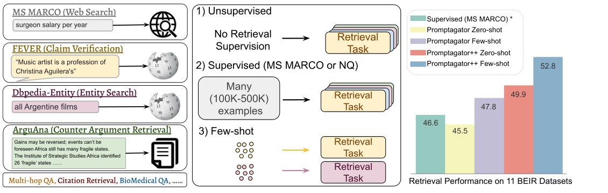
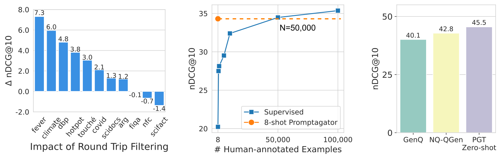
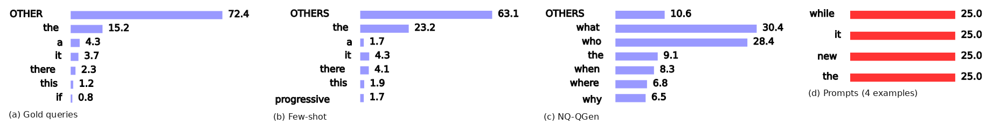
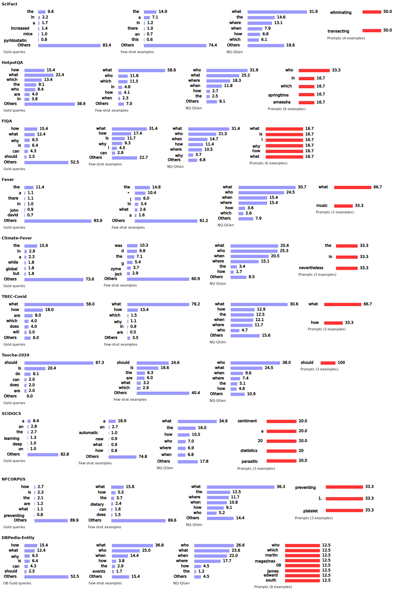
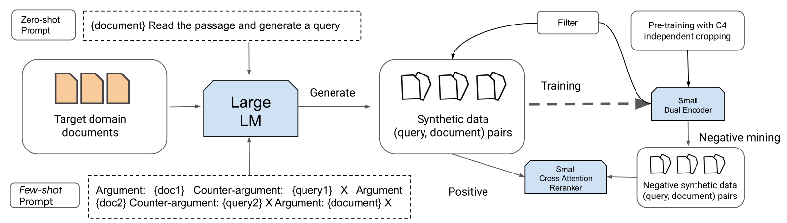

原文: arXiv:2209.11755（v1，2022-09-23） 说明: 中英对照供阅读。英文为论文原文（PDF 转写，公式按论文整理）；中文为对应翻译。图表编号与原文一致。caption 保留英文并附中译。数值原样，未改动。
预印本： arXiv:2209.11755v1 [cs.CL]，2022 年 9 月 23 日。
Promptagator: Few-shot Dense Retrieval From 8 Examples¶
Promptagator：从 8 条示例做少样本稠密检索¶
Authors / 作者： Zhuyun Dai∗†, Vincent Y. Zhao∗†, Ji Ma∗†, Yi Luan∗†, Jianmo Ni, Jing Lu, Anton Bakalov, Kelvin Guu, Keith B. Hall and Ming-Wei Chang†
∗ Equal contributions. / 同等贡献。 † Corresponding authors. / 通讯作者。
Affiliation / 单位： Google Research
Email / 邮箱： {zhuyundai, vzhao, maji, luanyi, mingweichang}@google.com
Abstract / 摘要¶
EN. Much recent research on information retrieval has focused on how to transfer from one task (typically with abundant supervised data) to various other tasks where supervision is limited, with the implicit assumption that it is possible to generalize from one task to all the rest. However, this overlooks the fact that there are many diverse and unique retrieval tasks, each targeting different search intents, queries, and search domains. In this paper, we suggest to work on Few-shot Dense Retrieval, a setting where each task comes with a short description and a few examples. To amplify the power of a few examples, we propose Prompt-base Query Generation for Retriever (Promptagator), which leverages large language models (LLM) as a few-shot query generator, and creates task-specific retrievers based on the generated data. Powered by LLM’s generalization ability, Promptagator makes it possible to create task-specific end-to-end retrievers solely based on a few examples without using Natural Questions (Kwiatkowski et al., 2019) or MS MARCO (Nguyen et al., 2016) to train dual encoders. Surprisingly, LLM prompting with no more than 8 examples allows dual encoders to outperform heavily engineered models trained on MS MARCO like ColBERT v2 (Santhanam et al., 2022) by more than 1.2 nDCG on average on 11 retrieval sets. Further training standard-size re-rankers using the same generated data yields another 5.0 point nDCG improvement. Our studies determine that query generation can be far more effective than previously observed, especially when a small amount of task-specific knowledge is given.
中. 近期信息检索研究大量关注：如何从一个通常带有充足监督数据的任务，迁移到监督有限的其它任务，隐含假设是可以从一个任务泛化到其余全部任务。但这忽视了一个事实：检索任务很多，彼此不同，而且各有独特目标，针对的搜索意图、查询和搜索领域都不一样。本文建议研究少样本稠密检索（Few-shot Dense Retrieval）：每个任务配有一段短描述和少量示例。为了放大少量示例的效力，本文提出面向检索器的基于提示的查询生成（Prompt-base Query Generation for Retriever，Promptagator）。它把大语言模型（large language model, LLM）用作少样本查询生成器，再根据生成的数据训练任务专用检索器。借助 LLM 的泛化能力，Promptagator 可以只凭少量示例做出任务专用的端到端检索器，而不用 Natural Questions（Kwiatkowski et al., 2019）或 MS MARCO（Nguyen et al., 2016）去训练双编码器。出人意料的是：用不超过 8 条示例做 LLM 提示，双编码器在 11 个检索集上的平均 nDCG 就能超过在 MS MARCO 上重度工程化的模型，例如 ColBERT v2（Santhanam et al., 2022），幅度超过 1.2；再用同一批生成数据去训练标准规模的重排器，还能再提高 5.0 个 nDCG 点。本文的研究表明，查询生成可以比以往观察到的有效得多，尤其是当给出少量任务特定知识的时候。
1 Introduction / 引言¶
EN. Recently, major progress has been made on neural retrieval models such as dual encoders, which can retrieve knowledge from a large collection of documents containing millions to billions of passages (Yih et al., 2011; Lee et al., 2019; Karpukhin et al., 2020). However, Thakur et al. (2021) recently proposed the BEIR heterogeneous retrieval benchmark, and showed that it is still difficult for neural retrievers to perform well on a wide variety of retrieval tasks that lack dedicated training data. Thus, previous approaches focus on transferring knowledge from question answering (QA) datasets such as MS MARCO (Nguyen et al., 2016). To best transfer from QA datasets, expressive retrievers are developed that allow fine-grained token-level interaction such as ColBERT (Khattab & Zaharia, 2020; Santhanam et al., 2022) and SPLADE (Formal et al., 2021) but with higher inference cost. Data augmentation via synthetic question generation has previously been explored (Ma et al., 2021; Shakeri et al., 2020), but these question generators are typically only trained on popular QA datasets.
中. 近来，神经检索模型取得了很大进展。双编码器（dual encoder）一类的模型，能够从包含数百万到数十亿段落的大规模文档集合里检索知识（Yih et al., 2011; Lee et al., 2019; Karpukhin et al., 2020）。然而 Thakur et al.（2021）提出了异构检索基准 BEIR，并表明：对缺少专用训练数据的多种检索任务，神经检索器仍然很难全面做好。因此，先前方法着重从问答（question answering, QA）数据集迁移知识，例如 MS MARCO（Nguyen et al., 2016）。为了更好地从 QA 数据集迁移，人们开发了表达力更强、允许细粒度词元级交互的检索器，例如 ColBERT（Khattab & Zaharia, 2020; Santhanam et al., 2022）和 SPLADE（Formal et al., 2021），但推理代价更高。用合成问题做数据增强此前也有人探索（Ma et al., 2021; Shakeri et al., 2020），但这些问题生成器通常只在流行的 QA 数据集上训练。
EN. We argue that it is hard to expect models based on one or two QA datasets to perform well across different retrieval tasks. First, different retrieval tasks have very different search intents; in other words, different definitions of “relevance”. For example, as illustrated in Figure 1(a), both Dbpedia-Entity (Hasibi et al., 2017) and FEVER (Thorne et al., 2018) are tasks to retrieve documents from Wikipedia. Dbpedia-Entity is a task to retrieve entities that are mentioned in the query, while FEVER is a task to find evidence that either supports or refutes a given statement. Which document is relevant to the query can be very different from one task to another task even if they share the same domain. Moreover, different tasks have distinct distributions of queries even when their search intents are similar. For example, in the BEIR benchmark, queries in HotpotQA (Yang et al., 2018) are long compositional questions, while queries in FiQA (Maia et al., 2018) are short financial questions.
中. 本文认为，很难指望建立在一两个 QA 数据集上的模型，在不同检索任务上都表现好。首先，不同检索任务的搜索意图差得很远；换句话说，「相关性」的定义不同。例如图 1(a) 所示，Dbpedia-Entity（Hasibi et al., 2017）和 FEVER（Thorne et al., 2018）都是从 Wikipedia 检索文档。Dbpedia-Entity 要检索查询里提到的实体，FEVER 要找支持或反驳给定陈述的证据。即便两个任务共享同一领域，对同一条查询而言哪篇文档算相关，也可以完全不同。其次，即便搜索意图相近，不同任务的查询分布也可以截然不同。例如在 BEIR 里，HotpotQA（Yang et al., 2018）的查询是长的组合问题，FiQA（Maia et al., 2018）的查询是短的金融问题。
Caption EN. Figure 1: Few-shot retrieval with Promptagator. Left (a): Retrieval tasks from BEIR differ in query distribution, retrieval corpus, and search intents. Middle (b): Most prior work uses supervised setting (2) which trains model on a large QA retrieval datasets and transfer to other retrieval tasks. Right (c): Few-shot Promptagator performance. Average nDCG@10 on 11 datasets from BEIR from our Promptagator models and previously MS MARCO-supervised models (SPLADE v2).
Caption 中. 图 1：用 Promptagator 做少样本检索。左 (a)：BEIR 里的检索任务在查询分布、检索语料和搜索意图上彼此不同。中 (b)：先前工作大多采用监督设定 (2)，即在大型 QA 检索数据集上训练模型，再迁移到其它检索任务。右 (c)：少样本 Promptagator 的表现。图中是本文 Promptagator 模型与此前在 MS MARCO 上监督训练的模型（SPLADE v2）在 BEIR 的 11 个数据集上的平均 nDCG@10。

EN. In this paper, we advocate to work on the setting of Few-shot Retrieval for diverse retrieval (§2), where each task comes with a short description and a few annotated examples to clearly illustrate the search intents. Given that only a few examples are available, we propose Prompt-base Query Generation for Retriever (Promptagator) (§3) which aims to resolve the data scarcity issue while retaining the efficiency of a small dual encoder, by harnessing the power of large language models (LLM) such as FLAN (Wei et al., 2022a). Promptagator combines prompting with LLMs as a query generator without fine-tuning (§3.1), and can generate good queries with minimal supervision – shown in Figure 1(b), it solely relies on a few supervised examples from the target task without using annotated query-document pairs from Natural Questions (Kwiatkowski et al., 2019) or MS MARCO (Nguyen et al., 2016) to train the retriever directly. The key insight of Promptagator is to amplify the power of few-shot examples by creating task-specific prompting, which in turn enables generating a large set of synthetic queries for training retrievers suited for the task. To ensure the generated data quality, we develop a filtering technique that ensures round-trip consistency using generated data only (§3.2). Our filter is tailored to retrieval, which removes ambiguous, generic, and low-quality questions, and significantly improves retrieval performance.
中. 本文主张，面向多样检索去研究少样本检索（Few-shot Retrieval）这一设定（§2）：每个任务带有一段短描述和少量标注示例，用来把搜索意图说清楚。既然只有少量示例，本文提出 Promptagator（§3）。它借助 FLAN（Wei et al., 2022a）这类大语言模型的能力，在保留小型双编码器效率的同时，缓解数据稀缺。Promptagator 把提示与 LLM 结合起来当作查询生成器，而且不对 LLM 做微调（§3.1），用极少监督就能生成好的查询。如图 1(b)，它只依赖目标任务上的少量监督示例，不用 Natural Questions（Kwiatkowski et al., 2019）或 MS MARCO（Nguyen et al., 2016）里标注好的查询–文档对去直接训练检索器。Promptagator 的关键洞察是：用任务专用的提示去放大少样本示例的效力，从而生成一大批合成查询，用来训练适合该任务的检索器。为保证生成数据的质量，本文设计了一种只用生成数据就能保证往返一致性（round-trip consistency）的过滤技术（§3.2）。这个过滤器是按检索来做的，会去掉含糊、过泛和低质量的问题，并显著提高检索效果。
EN. While Promptagator is not the first application of LLM for retrieval, prior attempts of using LLMs often come with higher serving cost. Neelakantan et al. (2022) proposes to use the GPT-3 (Brown et al., 2020) embeddings in dual encoder models. However, the embedding size is 12k and hence makes the search index footprint and inference cost high. Sachan et al. (2022) and Bonifacio et al. (2022) have applied prompting and LLMs for reranking, while leaving the retriever untouched. With Promptagator, we show that LLMs can be used to generate efficient end-to-end retriever with high accuracy. The contributions of the paper are as follows:
中. Promptagator 并不是 LLM 在检索上的第一次应用，但先前用 LLM 的尝试往往服务代价更高。Neelakantan et al.（2022）提出在双编码器里使用 GPT-3（Brown et al., 2020）的嵌入。可是嵌入维度高达 12k，于是搜索索引的体积和推理成本都很高。Sachan et al.（2022）和 Bonifacio et al.（2022）把提示和 LLM 用在重排上，检索器本身不动。本文用 Promptagator 表明：LLM 可以用来生成又高效又准确的端到端检索器。本文贡献如下：
EN. We analyze the previously overlooked differences across retrieval tasks in their search intents and query distributions, and propose a Few-Shot Retrieval setting for the BEIR dataset. Our prompt and fewshot examples will be released to facilitate future research.
中. 本文分析了此前被忽视的、检索任务之间在搜索意图和查询分布上的差异，并为 BEIR 提出少样本检索设定。提示和少样本示例将公开，以便后续研究。
EN. We propose Promptagator, a simple recipe for few-shot retrieval by prompting with a LLM to generate synthetic task-specific training data. For the first time, end-to-end retrievers solely based on a few supervised examples can be strong and efficient to serve with Promptagator.
中. 本文提出 Promptagator：一种简单的少样本检索做法，用 LLM 提示生成任务专用的合成训练数据。借助 Promptagator，只基于少量监督示例的端到端检索器第一次可以既强、又便于服务。
EN. Our experimental results show that, surprisingly, Promptagator with two-to-eight examples produced significantly better retrievers compared to recent models trained on MS MARCO or NQ that have over 500K human annotated examples (Figure 1(c)). Promptagator outperforms ColBERT v2 and SPLADE v2 on 11 retrieval tasks we tested, while reranking boosts results by another 5 points on standard retrieval evaluation metric.
中. 实验结果表明，出人意料的是：只用两到八条示例的 Promptagator，做出的检索器显著好于近期那些在 MS MARCO 或 NQ 上、用超过 50 万条人工标注示例训练的模型（图 1(c)）。在本文测试的 11 个检索任务上，Promptagator 超过 ColBERT v2 和 SPLADE v2；重排则在标准检索评价指标上再提高约 5 个点。
2 Few-shot Retrieval Task / 少样本检索任务¶
EN. In this section, we first introduce the definition of a retrieval task and the differences among different retrieval tasks. We then propose a new Few-Shot Retrieval setting for the BEIR benchmark.
中. 本节先给出检索任务的定义，以及不同检索任务之间的差别，再为 BEIR 基准提出一种新的少样本检索设定。
2.1 Retrieval Task / 检索任务¶
EN. Given a large corpus, a retrieval model is responsible to find documents that are most relevant to a provided query \(q\) according to a pre-defined relevancy. Formally, we define a retrieval task as:
where \(D = \{d_1, d_2, \ldots, d_n\}\) is a large corpus of documents for retrieval, \(Q\) is a query distribution, and \(I\) is the underlying search intent for the task. Depending on the task, \(D\) can be any document collection, such as web or Wikipedia. \(Q\) also varies across tasks, e.g., short keyword search queries, questions, arguments, etc. If \(I(q, d) = 1\), it means search intent of \(q\) has been satisfied by the document \(d\). For example, in QA tasks such as Natural Questions (NQ) the search intent is to find passages that provide the answer to the question, meaning \(I_{\mathrm{NQ}}(q, d) = 1\) if \(d\) answers \(q\). Importantly, for the same pair of \((q, d)\), their relevance can be completely different under different search intents. For example, some argument retrieval tasks look for supporting arguments, while other tasks need to retrieve counter arguments.
中. 给定一个大语料，检索模型要按预先定义的相关性，为查询 \(q\) 找出最相关的文档。形式化地，检索任务定义为 \(T = \{D, Q, I\}\)。其中 \(D = \{d_1, d_2, \ldots, d_n\}\) 是供检索的大型文档语料，\(Q\) 是查询分布，\(I\) 是该任务底层的搜索意图。视任务而定，\(D\) 可以是任何文档集合，例如网页或 Wikipedia。\(Q\) 也随任务变化，例如短的关键词查询、问题、论点等。若 \(I(q, d) = 1\)，表示文档 \(d\) 满足了 \(q\) 的搜索意图。例如在 Natural Questions（NQ）这类 QA 任务里，搜索意图是找到能回答问题的段落，也就是若 \(d\) 回答了 \(q\)，则 \(I_{\mathrm{NQ}}(q, d) = 1\)。重要的是：同一对 \((q, d)\)，在不同搜索意图下相关性可以完全不同。例如有的论辩检索要找支持论点，有的任务则要检索反论点。
EN. In this work, we target the scenario where a target retrieval corpus \(D_T\) is available, but the amount of annotated query-document pairs for the new task is limited. Most prior of research efforts were put into adapting retrievers to new corpus \(D_T\), but the divergence in queries \(Q_T\) and intents \(I_T\) remains under-explored. Next, we explore how search intent can be expressed with a short description and very few number of examples.
中. 本文针对的场景是：目标检索语料 \(D_T\) 可以拿到，但新任务上标注好的查询–文档对数量有限。先前研究大多把力气花在让检索器适应新语料 \(D_T\)，而查询 \(Q_T\) 和意图 \(I_T\) 上的分歧仍然探索不足。接下来讨论如何用一段短描述和极少的示例把搜索意图表达出来。
2.2 Few-shot BEIR Setting / 少样本 BEIR 设定¶
EN. In this paper, we argue that it is important to let retrievers be aware of task-specific query distribution and search intent, as opposed to merely focusing on the domain adaptation of \(D\). Prior belief is that it is expensive to collect enough in-distribution queries and relevance labels to train a neural retriever, but intuitively, a person can understand a retrieval task by reading a short instruction and going over a few examples. In this work, we ask if a few (8 or fewer) examples are sufficient for the machines to learn a task-specific retriever. To facilitate our study and future research of few-shot retrieval, we define a new few-shot retrieval evaluation setting built upon the BEIR heterogeneous retrieval benchmark (Thakur et al., 2021).
中. 本文认为，让检索器知道任务特定的查询分布和搜索意图是重要的，不能只做语料 \(D\) 的领域适应。以往的看法是：要收集足够多的分布内查询和相关性标签来训练神经检索器，代价很高。但直觉上，人读一段短说明、再看几条示例，就能理解一个检索任务。本文追问：少量（8 条或更少）示例是否足够让机器学会一个任务专用检索器。为便于本文的研究和以后的少样本检索研究，本文在 BEIR 异构检索基准（Thakur et al., 2021）上定义一种新的少样本检索评测设定。
EN. BEIR has 18 information retrieval datasets across 9 domains, including Bio-Medical, Finance, News, Twitter, Wikipedia, StackExchange, Quora, Scientific, and Misc. These datasets also cover a diverse range of search intents: QA retrieval (question-to-document), duplicate question discovery (question-to-question), fact checking (claim-to-document), etc. Following Santhanam et al. (2022) and Formal et al. (2021), we narrow our focus to the publicly-available datasets in BEIR. The original BEIR evaluation used a zero-shot set up, where no queries or relevant query-document pairs from the evaluation datasets can be used to train the retrievers.
中. BEIR 有 18 个信息检索数据集，跨 9 个领域，包括生物医学、金融、新闻、Twitter、Wikipedia、StackExchange、Quora、科学，以及杂项。这些数据集也覆盖多样的搜索意图：QA 检索（问题到文档）、重复问题发现（问题到问题）、事实验证（陈述到文档）等。沿 Santhanam et al.（2022）和 Formal et al.（2021），本文把焦点收窄到 BEIR 中公开可用的数据集。原来的 BEIR 评测是零样本设定：评测数据集里的查询，以及相关的查询–文档对，都不能用来训练检索器。
EN. We extend BEIR to the few-shot setting by randomly taking a few (2 to 8) in-domain relevant query-document examples as the task-specific supervision. The examples are sampled from the development set when it is available. For the BEIR tasks which only have a test set, we use samples from the test data as few-shot examples. To make the evaluation fair, when evaluating few-shot retriever models, these test-set examples should be treated as “failed to retrieve” even if the model successfully retrieves them. The prompt and few-shot examples will be released to the public.
中. 本文把 BEIR 扩展到少样本设定：随机取少量（2 到 8 条）领域内的相关查询–文档示例，作为任务特定监督。有开发集时，示例从开发集采样。对只有测试集的 BEIR 任务，则从测试数据里采样作为少样本示例。为使评测公平，评测少样本检索模型时，这些来自测试集的示例即便被模型成功检索到，也应视为「未能检索」。提示和少样本示例将向公众发布。
3 Promptagator¶
EN. To approach the goal of creating retrievers from few-shot examples, we propose Prompt-base Query Generation for Retriever (Promptagator). The key idea of Promptagator is to transform the few examples into many more examples by prompting a LLM, instead of using them to train a retriever directly.
中. 为了从少样本示例做出检索器，本文提出 Promptagator。它的关键想法是：通过提示一个 LLM，把少量示例变成多得多的示例，而不是直接拿这几条去训练检索器。
EN. Promptagator consists of three components: prompt-based query generation, consistency filtering, and retriever training. During prompt-based query generation, a task-specific prompt will be combined with a large language model to produce queries for the target task using \(D_T\). Then a filtering step cleans the generated data based on round-trip consistency; surprisingly, we found a retriever trained only on the synthetic data can be used to filter the synthetic data. Finally, a retriever (in this paper, dual encoders) and a cross attention reranker will be trained based on the generated data. Figure 5 in Appendix shows the overall procedure.
中. Promptagator 由三部分组成：基于提示的查询生成、一致性过滤，以及检索器训练。基于提示的查询生成阶段，把任务专用提示和一个大语言模型结合起来，用 \(D_T\) 为目标任务产生查询。然后一个过滤步骤按往返一致性清洗生成数据；出人意料的是，只用合成数据训练出来的检索器，就可以用来过滤合成数据。最后，基于生成数据训练一个检索器（本文用双编码器）和一个交叉注意力重排器。附录图 5 给出整体流程。
3.1 Prompt-base Query Generation / 基于提示的查询生成¶
EN. Promptagator constructs an instruction prompt that consists of task-specific query and passage descriptions and \(k\) annotated query-document examples from the target dataset. Specifically, let \(\{(q_i, d_i)\}_{i=1}^{k}\) be \(k\) relevant query-document pairs from the target task \(T\), where \(q_i \sim Q_T\), \(d_i \in D_T\), and \(I_T(q_i, d_i) = 1\). Following FLAN (Wei et al., 2022a), we use instruction prompts with the following form:
where \(e_{\mathrm{doc}}(d)\) and \(e_{\mathrm{query}}(q)\) are task-specific document and query descriptions respectively, and \(d\) is a new document. Take ArguAna for example, we set \(e_{\mathrm{doc}}(d) = \text{“Argument: }\{d\}\text{”}\) and \(e_{\mathrm{query}}(q) = \text{“Counter Argument: }\{q\}\text{”}\) to inform the LLM to generate counter arguments. The LLM is expected to generate \(e_{\mathrm{query}}(\hat{q})\). If the LLM does not generate the query description correctly, we consider it a generation failure and drop the output; otherwise we accept \(\hat{q}\) and form a synthetic relevant example \((\hat{q}, d)\).
中. Promptagator 构造指令提示，其中包含任务特定的查询与段落描述，以及来自目标数据集的 \(k\) 条标注查询–文档示例。具体地，设 \(\{(q_i, d_i)\}_{i=1}^{k}\) 是目标任务 \(T\) 上的 \(k\) 条相关查询–文档对，其中 \(q_i \sim Q_T\)，\(d_i \in D_T\)，且 \(I_T(q_i, d_i) = 1\)。沿 FLAN（Wei et al., 2022a），指令提示取如下形式：先交替放入 \(k\) 条示例的文档描述与查询描述，最后放入一篇新文档的文档描述。\(e_{\mathrm{doc}}(d)\) 和 \(e_{\mathrm{query}}(q)\) 分别是任务特定的文档描述和查询描述，\(d\) 是新文档。以 ArguAna 为例，设 \(e_{\mathrm{doc}}(d) = \text{“Argument: }\{d\}\text{”}\)，\(e_{\mathrm{query}}(q) = \text{“Counter Argument: }\{q\}\text{”}\)，用来告诉 LLM 去生成反论点。期望 LLM 生成 \(e_{\mathrm{query}}(\hat{q})\)。如果 LLM 没有正确生成查询描述，就视为生成失败并丢掉该输出；否则接受 \(\hat{q}\)，组成一条合成相关示例 \((\hat{q}, d)\)。
EN. Running the prompt on all documents from \(D_T\), we can create a large set of synthetic \((q, d)\) examples, amplifying the information from few examples into a large synthetic dataset whose query distribution is similar to the true task distribution \(Q_T\) and whose query-document pairs convey the true search intent \(I_T\).
中. 在 \(D_T\) 的文档上运行这一提示，就能造出一大批合成 \((q, d)\) 示例，把少量示例里的信息放大成一个大型合成数据集：其查询分布接近真实任务分布 \(Q_T\)，其查询–文档对传递真实搜索意图 \(I_T\)。
EN. We use FLAN (Wei et al., 2022a) as the LLM for query generation in this work. FLAN is trained on a collection of tasks described via instructions and was shown to have good zero/few-shot performance on unseen tasks. We use the 137B FLAN checkpoint provided by the authors. During prompt engineering, we use at most 8 examples, and reduce the number if they exceed the input length limit of FLAN. We also manually truncate individual query and document in the examples if they are too long. We randomly sample up to 1 million documents from each corpus and generate 8 questions per document using sampling decoding with temperature 0.7. The set of templates can be found in Table 4 in the Appendix.
中. 本文用 FLAN（Wei et al., 2022a）作为查询生成的 LLM。FLAN 在一组用指令描述的任务上训练，并被表明在未见任务上有较好的零样本 / 少样本表现。本文使用作者提供的 137B FLAN 检查点。做提示设计时，最多用 8 条示例；若超出 FLAN 的输入长度限制，就减少条数。示例里的单条查询和文档如果太长，也会手工截断。每个语料随机采样至多 100 万篇文档，用温度 0.7 的采样解码，每篇文档生成 8 个问题。模板集合见附录表 4。
3.2 Consistency Filtering Using Only Generated Data / 只用生成数据做一致性过滤¶
EN. The filtering step improves the quality of generated queries by ensuring the round-trip consistency (Alberti et al., 2019): a query should be answered by the passage from which the query was generated. In our retrieval case, the query should retrieve its source passage. Consistency filtering (Alberti et al., 2019; Lewis et al., 2021) has been shown crucial for synthetic question generation on QA tasks. However, these techniques typically rely on an external question-answering model as the filter, trained on existing supervised QA data. Since we want to address different search intents, using a single external filtering model does not work for us.
中. 过滤步骤通过保证往返一致性（Alberti et al., 2019）来提高生成查询的质量：一条查询应当能被生成它的那段话回答。落到本文的检索情形，查询应当检索回它的源段落。一致性过滤（Alberti et al., 2019; Lewis et al., 2021）已被表明对 QA 任务上的合成问题生成至关重要。不过这些技术通常依赖一个外部问答模型当过滤器，而该模型是在已有的监督 QA 数据上训练的。本文要应对不同的搜索意图，用单一的外部过滤模型并不合适。
EN. Surprisingly, we find out that consistency filtering based on the generated data alone can work well over the different search intents observed in BEIR. We first use the generated query and document pairs to train an initial retriever. Given a synthetic query-document pair \((q, d)\), we use the initial retriever to predict the most relevant passages for \(q\). We keep \(q\) only when \(d\) occurs among the Top-\(K\) passages returned by the retriever. This may seem unintuitive because the filtering model (the initial retriever) is trained on the same noisy synthetic data that it will filter. We show this filter substantially reduces the number of synthetic queries and significantly improves retrieval performance.
中. 出人意料的是，只基于生成数据的一致性过滤，在 BEIR 里观察到的不同搜索意图上都能工作得不错。本文先用生成的查询和文档对训练一个初始检索器。给定一条合成查询–文档对 \((q, d)\)，用这个初始检索器预测对 \(q\) 最相关的段落。只有当 \(d\) 出现在检索器返回的 Top-\(K\) 段落里时，才保留 \(q\)。这看起来不太直观，因为过滤模型（那个初始检索器）正是在它将要过滤的同一份有噪声的合成数据上训练的。本文表明，这个过滤器大幅减少合成查询的数量，并显著提高检索效果。
3.3 Few-shot Promptagator Retriever / 少样本 Promptagator 检索器¶
EN. Our synthetically generated data allows training task-specific neural retrievers for tasks where supervised in-domain fine-tuning is challenging due to data scarcity. In this work, we use the standard dual-encoder retrieval architecture and we propose a simple pretrain/fine-tune recipe.
中. 合成数据使得可以为那些因数据稀缺而难以做监督领域内微调的任务，训练任务专用的神经检索器。本文使用标准双编码器检索结构，并提出一套简单的预训练 / 微调做法。
EN. Table 1 compares settings, resources, and model size. Promptagator is a 110M dual encoder and Promptagator++ is a 110M reranker. Good generated data lets this simple pipeline reach strong performance. UPR’s query-generation model is used for reranking rather than for the synthetic data augmentation that other query-generation approaches do.
中. 表 1 比较设定、资源和模型规模。Promptagator 是 110M 的双编码器，Promptagator++ 是 110M 的重排器。生成数据质量足够好时，这条简单流水线就能达到强的表现。UPR 的查询生成模型是用来做重排的，不是像其它查询生成方法那样用来做合成数据增强。
| Model | Retrieval supervision | Cross-attn distillation | Retriever | Token-level retrieval | Serving model size | # reranking docs | QGen model |
|---|---|---|---|---|---|---|---|
| Contriever | NA | self | 110M | 0 | |||
| GTR-XXL | MS MARCO (500K) | self | 6B | 0 | |||
| SPLADE v2 | MS MARCO (500K) | yes | self | yes | 110M | 0 | |
| ColBERT v2 | MS MARCO (500K) | yes | self | yes | 110M | 0 | |
| GenQ | MS MARCO (500K) | yes | self | 110M | 0 | T5 (MS MARCO) | |
| GPL | MS MARCO (500K) | yes | self | 110M | 0 | T5 (MS MARCO) | |
| MonoT5 | MS MARCO (500K) | BM25 | yes | 3B | 1000 | ||
| InPars | Few (3) | BM25 | yes | 3B | 1000 | GPT-3 | |
| UPR | NA | Contriever | 110M+3B | 1000 | T0 | ||
| Promptagator | Few (0–8) | self | 110M | 0 | FLAN | ||
| Promptagator++ | Few (0–8) | Promptagator | 110M+110M | 200 | FLAN |
EN. Table 1: Comparison of settings, resources and model size for different frameworks. Our models are just a 110M-size dual encoder Promptagator and a 110M-size reranker Promptagator++, as good quality generated data allows simple models/pipeline to achieve strong performance. UPR uses T0 query generation for reranking, instead of for synthetic data augmentation that other QGen approaches do. Check marks in the original table are transcribed as “yes”.
中. 表 1：不同框架在设定、资源和模型规模上的比较。本文的模型只是 110M 的双编码器 Promptagator 和 110M 的重排器 Promptagator++。生成数据质量好，就允许简单的模型 / 流水线达到强的表现。UPR 用 T0 做查询生成是为了重排，而不是像其它查询生成方法那样做合成数据增强。原表中的勾选在此记为 “yes”。
EN. Following prior work (Ni et al., 2021), we initialize the dual encoder using the Transformer encoder from a T5 (Raffel et al., 2020) checkpoint. We then pretrain our retriever on C4 with the independent cropping task from Contriever (Izacard et al., 2022a), where we treat two random crops from the same document as positive retrieval pairs and train with a cross-entropy loss over in-batch random negatives. Next, we fine-tune the dual-encoder on the query-document pairs generated from our prompt-base QGen, again with cross-entropy loss over in-batch random negatives. After training for a set number of epochs, we apply round-trip filtering on our synthetic data as described in (§3.2) using this initial dual encoder, and continue to fine-tune the dual encoder on the filtered data.
中. 沿先前工作（Ni et al., 2021），用 T5（Raffel et al., 2020）检查点里的 Transformer 编码器初始化双编码器。然后在 C4 上用 Contriever（Izacard et al., 2022a）的独立裁剪任务预训练检索器：把同一篇文档的两段随机裁剪当作检索正例对，用批内随机负例上的交叉熵损失训练。接着在基于提示的查询生成所产生的查询–文档对上微调双编码器，损失同样是批内随机负例上的交叉熵。训练若干轮之后，用这个初始双编码器按 §3.2 对合成数据做往返过滤，再在过滤后的数据上继续微调双编码器。
EN. We also propose Promptagator++, a reranker trained on the same synthetic data generated from our prompt-base QGen, which refines the retrieved candidates using a slower but more accurate cross-attention model. We train the reranker using a cross-entropy loss with 31 sampled negatives from top 200 passages retrieved by the Promptagator retriever, which approximates the inference time distribution (reranking top 200 from the retriever).
中. 本文还提出 Promptagator++：一个在同一批、由基于提示的查询生成得到的合成数据上训练的重排器。它用一个更慢但更准的交叉注意力模型，去细化检索到的候选。重排器用交叉熵损失训练，负例是从 Promptagator 检索器取出的前 200 个段落里采样的 31 条，用来逼近推理时的分布（对检索器的前 200 名做重排）。
3.4 Zero-shot Promptagator Retriever / 零样本 Promptagator 检索器¶
EN. The prompt-based query generation can also run in a zero-shot manner, where we universally apply the following prompt irrespective of the target task: {d} Read the passage and generate a query. Here \(d\) denotes the document text. We train retrievers and rerankers on the zero-shot prompt generated data, leading to zero-shot Promptagator and zero-shot Promptagator++.
中. 基于提示的查询生成也可以按零样本方式运行：不论目标任务是什么，统一使用提示 {d} Read the passage and generate a query.（读这段话并生成一条查询）。这里 \(d\) 表示文档文本。在零样本提示生成的数据上训练检索器和重排器，就得到零样本 Promptagator 和零样本 Promptagator++。
3.5 Discussion / 讨论¶
EN. Table 1 compares the Promptagator recipe to some recently proposed approaches. Our dual encoder does not rely on hard negative mining or distillation; it uses a standard dual encoder model without adding the token-level matching inductive biases that ColBERT and SPLADE have. Our reranker also uses a 110M model instead of larger models. We aim to use this simplified recipe to highlight the power of few-shot data, as we will show in (§4.3). Comparing Promptagator to these approaches, the ability to use a prompt and few-shot examples with a LLM makes Promptagator able to generate efficient models with high accuracy. While other LLM approaches such as InPars (Bonifacio et al., 2022) and UPR (Sachan et al., 2022) have focused on reranking, Promptagator focuses on retrieval.
中. 表 1 把 Promptagator 的做法和一些近期方法作了比较。本文的双编码器不依赖难负例挖掘，也不依赖蒸馏；它用的是标准双编码器，没有加入 ColBERT 和 SPLADE 那种词元级匹配的归纳偏置。重排器同样用 110M 模型，而不是更大的模型。本文想用这套简化做法来突出少样本数据的效力，如 §4.3 所示。和这些方法相比，能把提示和少样本示例交给一个 LLM 来用，使 Promptagator 能够生成高效且准确率高的模型。其它 LLM 方法，例如 InPars（Bonifacio et al., 2022）和 UPR（Sachan et al., 2022），把重点放在重排上；Promptagator 把重点放在检索上。
4 Experiments / 实验¶
EN. We report quantitative evaluation of Promptagator by measuring its retrieval performance on the BEIR benchmark. We then dive deeper into the results through ablation studies and qualitative analysis.
中. 本文在 BEIR 基准上测量检索表现，对 Promptagator 做定量评测，再用消融实验和定性分析把结果往下拆。
4.1 Implementation / 实现¶
EN. The original FLAN training set overlapped with 2 datasets in the BEIR benchmark: NQ and Quora. FLAN is only trained on question-to-answer tasks and never observes the question-passage supervision needed for retrieval training. Additionally, FLAN has not been fine-tuned on query generation tasks on QA datasets. Most of existing systems use all of the supervised data from MS MARCO in their system. Therefore we exclude MS MARCO, NQ and Quora from our main evaluations. We report nDCG@10, the standard retrieval evaluation metric on BEIR. We study the impact of NQ and Quora on FLAN query generation in (§4.3).
中. 原来的 FLAN 训练集与 BEIR 里的 2 个数据集有重叠：NQ 和 Quora。FLAN 只在「问题到答案」任务上训练，从未见过检索训练所需的「问题–段落」监督。另外，FLAN 也没有在 QA 数据集的查询生成任务上微调过。现有系统大多在系统里使用了 MS MARCO 的全部监督数据。因此主评测排除 MS MARCO、NQ 和 Quora。本文报告 nDCG@10，即 BEIR 上的标准检索评价指标。NQ 和 Quora 对 FLAN 查询生成的影响在 §4.3 研究。
EN. For Promptagator’s prompt-based query generation, we sample questions from the LLM with a temperature of 0.7. For round-trip filtering, we use MS MARCO as validation set and tune \(K\). We find setting \(K\) to 1 leads to the best results and thus use 1 for all BEIR datasets, i.e. we keep a \((q, d)\) pair only when \(d\) is ranked in the top 1 place by the initial dual encoder.
中. Promptagator 的基于提示的查询生成，以温度 0.7 从 LLM 采样问题。往返过滤用 MS MARCO 作验证集来调节 \(K\)。发现把 \(K\) 设为 1 结果最好，因此全部 BEIR 数据集都用 1：只有当初始双编码器把 \(d\) 排在第 1 名时，才保留 \((q, d)\) 对。
EN. We implement Promptagator’s dual encoders following GTR (Ni et al., 2021); in particular, we use a shared Transformer encoder initialized from T5, take the mean pooling of the top encoder layer, and project it to a fixed 768-dimensional embedding. To ensure efficiency, we use the T5-base version 1.1 encoder architecture consisting of 110M parameters. For Promptagator++ reranking models, we use the standard Transformer cross attention encoder, also initialized with a 110M T5-base encoder checkpoint. At inference time, we rerank the top 200 candidates retrieved from the Promptagator dual encoder retriever.
中. Promptagator 的双编码器按 GTR（Ni et al., 2021）实现。具体而言，使用从 T5 初始化的共享 Transformer 编码器，对最上层编码器做均值池化，再投影到固定的 768 维嵌入。为保证效率，使用 T5-base 1.1 编码器结构，参数量 110M。Promptagator++ 的重排模型使用标准 Transformer 交叉注意力编码器，同样用 110M 的 T5-base 编码器检查点初始化。推理时，对 Promptagator 双编码器检索器取出的前 200 个候选做重排。
EN. We mostly follow the hyper-parameters used in Ni et al. (2021). The default batch size in this recipe is 6k; however, some of the corpora in BEIR contain only a few thousand documents, making multiple relevant documents appear in the same batch which interacts negatively with the in-batch softmax loss. We found it important to use appropriate batch sizes and training steps for those small datasets. We split the datasets into three groups based on corpus size: small datasets (<50k), middle datasets (50k–500k), large datasets (>500k). For dual encoder training, we use 128 batch size for small datasets and 6k for others. We finetune for 5k steps for large datasets and 1k for others. For ranking models, we use batch size of 64 for all datasets and finetune large datasets for 20k steps, 5k for others.
中. 超参数大体沿用 Ni et al.（2021）。这套做法的默认批大小是 6k；但 BEIR 里有的语料只有几千篇文档，同一批里会出现多篇相关文档，这与批内 softmax 损失相互冲突、产生负面影响。对这些小数据集，使用合适的批大小和训练步数很重要。按语料规模把数据集分成三组：小数据集（<50k）、中数据集（50k–500k）、大数据集（>500k）。双编码器训练时，小数据集批大小 128，其余 6k。大数据集微调 5k 步，其余 1k 步。排序模型对所有数据集都用批大小 64；大数据集微调 20k 步，其余 5k 步。
4.2 Main Results / 主要结果¶
EN. Table 2 shows the experimental results. We first notice that zero-shot Promptagator already serves as a strong baseline, comparing favorably to other retrieval baselines trained on O(100K) examples from MS MARCO. Nonetheless, few-shot Promptagator markedly improves upon zero-shot Promptagator, increasing the averaged nDCG@10 by over 2 points, which highlights the impact of adapting the LLM to the target task. Few-shot Promptagator, being relatively simple in training steps and model architecture, outperforms strong baselines such as GenQ (Thakur et al., 2021) and GPL (Wang et al., 2022) which also use query generation to augment training data, as well as ColBERT v2 (Santhanam et al., 2022) and SPLADE v2 (Formal et al., 2021) which rely on token level interaction architectures and distillation recipes.
中. 表 2 给出实验结果。首先可以看到，零样本 Promptagator 已经是一个强基线，与其它在 MS MARCO 的 O(100K) 条示例上训练的检索基线相比并不落下风。尽管如此，少样本 Promptagator 相对零样本 Promptagator 有明显提升，平均 nDCG@10 提高超过 2 个点，这说明把 LLM 适配到目标任务是有作用的。少样本 Promptagator 在训练步骤和模型结构上相对简单，仍然超过 GenQ（Thakur et al., 2021）和 GPL（Wang et al., 2022）这类同样用查询生成来增强训练数据的强基线，也超过依赖词元级交互结构和蒸馏做法的 ColBERT v2（Santhanam et al., 2022）与 SPLADE v2（Formal et al., 2021）。
EN. Our reranker Promptagator++ further boosts performance with another 5 points gain on nDCG@10. It significantly outperforms UPR (Sachan et al., 2022) whose reranker uses T0 (Sanh et al., 2021), an instruction tuned LLM similar to FLAN. It also outperforms monoT5-3B (Nogueira et al., 2020), which achieved previous state-of-the-art reranking performance on BEIR in a recent study by Rosa et al. (2022). Note most of these reranker approaches use a 3B model for its better generalization ability than smaller models, while Promptagator++ uses a standard 110M reranker.
中. 重排器 Promptagator++ 把 nDCG@10 再提高 5 个点。它显著超过 UPR（Sachan et al., 2022）；UPR 的重排器使用 T0（Sanh et al., 2021），那是一个与 FLAN 类似的、经指令调优的 LLM。它也超过 monoT5-3B（Nogueira et al., 2020）。在 Rosa et al.（2022）的近期研究里，monoT5-3B 曾达到 BEIR 上此前的重排最优。注意这些重排方法大多使用 3B 模型，以获得比小模型更好的泛化；Promptagator++ 使用的是标准的 110M 重排器。
EN. Comparing few-shot Promptagator to baselines, the biggest improvement is on Touche-2020 (touché), followed by ArguAna (arg). Touche-2020’s goal is to retrieve documents for a controversial topic, e.g., “should felons who have completed their sentence be allowed to vote?”. ArguAna’s goal is to find the counter-arguments that oppose the input argument, and the input arguments are often several-sentence long. Both tasks are extremely different from traditional QA retrieval data that other models use, which are dominated by factoid questions. On the other hand, few-shot Promptagator can successfully adapt to this task with a few examples.
中. 把少样本 Promptagator 和基线比较，提升最大的是 Touche-2020（touché），其次是 ArguAna（arg）。Touche-2020 的目标是为一个有争议的话题检索文档，例如 “should felons who have completed their sentence be allowed to vote?”（已服完刑期的重罪犯是否应被允许投票？）。ArguAna 的目标是找到反对输入论点的反论点，输入论点往往有好几句长。这两个任务都和其它模型所用的传统 QA 检索数据极不相同，那些数据以事实型问题为主。另一方面，少样本 Promptagator 用少量示例就能成功适应这类任务。
EN. Climate-FEVER’s relevant \((q, d)\) pairs in BEIR are not well-defined (§4.3), so we also tried running query-generation with FEVER’s few-shot prompt on Climate-FEVER. We report the results with the FEVER prompt in parentheses, but they are not used for computing the average.
中. BEIR 里 Climate-FEVER 的相关 \((q, d)\) 对定义得并不清楚（§4.3），因此本文也试过用 FEVER 的少样本提示在 Climate-FEVER 上做查询生成。用 FEVER 提示得到的结果写在括号里，但不计入平均。
表 2 的列是 BEIR 公开集上的 nDCG@10。列名缩写与论文一致：arg = ArguAna，touché = Touche-2020，covid = TREC-COVID，nfc = NFCorpus，hotpot = HotpotQA，dbp = DBPedia-Entity，climate = Climate-FEVER，fever = FEVER，scifact = SciFact，scidocs = SCIDOCS，fiqa = FiQA-2018。括号中的 Climate-FEVER 数字来自 FEVER 提示，不参与 AVG。
EN. Table 2, retrievers. nDCG@10. Unsupervised: BM25 and Contriever. Supervised on MS MARCO: GTR-XXL, SPLADE v2, ColBERT v2, GenQ, GPL. Promptagator (110M): zero-shot and few-shot. ColBERT v2 and SPLADE v2 allow token-level interactions; Promptagator dual encoders do not.
中. 表 2 上半，检索器，指标 nDCG@10。无监督：BM25 与 Contriever。在 MS MARCO 上监督：GTR-XXL、SPLADE v2、ColBERT v2、GenQ、GPL。Promptagator（110M）：零样本与少样本。ColBERT v2 和 SPLADE v2 允许词元级交互；Promptagator 双编码器不允许。
| Retriever | arg | touché | covid | nfc | hotpot | dbp | climate | fever | scifact | scidocs | fiqa | AVG. |
|---|---|---|---|---|---|---|---|---|---|---|---|---|
| BM25 | 31.5 | 36.7 | 65.6 | 32.5 | 60.3 | 31.3 | 21.3 | 75.3 | 66.5 | 15.8 | 23.6 | 41.8 |
| Contriever | 37.9 | 19.3 | 27.4 | 31.7 | 48.1 | 29.2 | 15.5 | 68.2 | 64.9 | 14.9 | 24.5 | 34.7 |
| GTR-XXL | 54.0 | 25.6 | 50.1 | 34.2 | 59.9 | 40.8 | 26.7 | 74.0 | 66.2 | 16.1 | 46.7 | 44.9 |
| SPLADE v2 | 47.9 | 27.2 | 71.0 | 33.4 | 68.4 | 43.5 | 23.5 | 78.6 | 69.3 | 15.8 | 33.6 | 46.6 |
| ColBERT v2 | 46.3 | 26.3 | 73.8 | 33.8 | 66.7 | 44.6 | 17.6 | 78.5 | 69.3 | 15.4 | 35.6 | 46.2 |
| GenQ | 49.3 | 18.2 | 61.9 | 31.9 | 53.4 | 32.8 | 17.5 | 66.9 | 64.4 | 14.3 | 30.8 | 40.1 |
| GPL | 55.7 | 25.5 | 70.0 | 34.5 | 58.2 | 38.4 | 23.5 | 75.9 | 67.4 | 16.9 | 34.4 | 45.5 |
| Promptagator zero-shot | 53.8 | 26.6 | 72.7 | 33.4 | 60.4 | 36.4 | 21.4 | 76.2 | 62.3 | 16.3 | 40.4 | 45.5 |
| Promptagator few-shot | 59.4 | 34.5 | 75.6 | 33.4 | 61.4 | 38.0 | 16.8 (24.0) | 77.0 | 65.0 | 18.4 | 46.2 | 47.8 |
EN. Table 2, retriever plus reranker. nDCG@10. Unsupervised rerankers: UPR (3B); InPars (3B) reports only TREC-COVID. Supervised on MS MARCO: monoT5 (220M) and monoT5 (3B). Promptagator++ (110M + 110M): zero-shot and few-shot. Where speed is not a concern, a reranker is often used. Promptagator++ is trained on the same generated data and gets a significant improvement.
中. 表 2 下半，检索器加重排器，指标 nDCG@10。无监督重排：UPR（3B）；InPars（3B）只报告了 TREC-COVID。在 MS MARCO 上监督：monoT5（220M）与 monoT5（3B）。Promptagator++（110M + 110M）：零样本与少样本。速度不是问题的场合，常常使用重排器。Promptagator++ 用同一批生成数据训练，并得到显著提升。
| Retriever + reranker | arg | touché | covid | nfc | hotpot | dbp | climate | fever | scifact | scidocs | fiqa | AVG. |
|---|---|---|---|---|---|---|---|---|---|---|---|---|
| UPR (3B) | 50.3 | 21.3 | 60.4 | 33.3 | 72.2 | 33.8 | 9.5 | 57.3 | 69.6 | 17.3 | 45.0 | 42.7 |
| InPars (3B) | – | – | 78.4 | – | – | – | – | – | – | – | – | – |
| monoT5 (220M) | 13.2 | 27.7 | 77.8 | 35.7 | 69.5 | 41.9 | 24.5 | 80.2 | 73.6 | 16.5 | 41.4 | 45.6 |
| monoT5 (3B) | 28.8 | 20.0 | 79.5 | 38.4 | 75.9 | 47.8 | 28.0 | 85.0 | 77.7 | 19.7 | 51.4 | 51.1 |
| Promptagator++ zero-shot | 52.1 | 27.8 | 76.0 | 36.0 | 71.2 | 41.3 | 22.6 | 83.8 | 73.2 | 19.1 | 45.9 | 49.9 |
| Promptagator++ few-shot | 63.0 | 38.1 | 76.2 | 37.0 | 73.6 | 43.4 | 20.3 (24.1) | 86.6 | 73.1 | 20.1 | 49.4 | 52.8 |
4.3 Ablation Study / 消融实验¶
EN. Next, we study our results in greater detail and analyze factors contributing to performance.
中. 接下来更细地研究结果，并分析对表现有贡献的因素。
EN. Impact of consistency filtering. In Figure 2(a), we show the quality difference between few-shot Promptagator with and without round-trip filtering. We can see that filtering improves performance on 8 out of 11 datasets, and leads to 2.5 points improvement on average. These results demonstrate the effectiveness of our filtering strategy. There are nonetheless datasets where filtering hurts model quality such as NFCorpus and SciFact. Note these are the smallest datasets in terms of generated queries. We conjecture further tuning dual encoder models on the filtered data results in overfitting.
中. 一致性过滤的影响。图 2(a) 给出少样本 Promptagator 在有、无往返过滤时的质量差。可以看到过滤在 11 个数据集中的 8 个上提高了表现，平均提高 2.5 个点。这些结果说明过滤策略是有效的。尽管如此，仍有数据集上过滤损害模型质量，例如 NFCorpus 和 SciFact。注意这两份按生成查询数量来说是最小的数据集。本文推测，在过滤后的数据上继续调双编码器会导致过拟合。
EN. Manually examining the query-document pairs removed by the filter, we find the majority of cases are either the query being too general which matches many documents, or the query contains hallucination irrelevant to the document. There are also cases where high quality query-document pairs were incorrectly removed since the initial dual encoder model ranks other documents higher. We suspect designing query-specific \(K\) values would help retain such query-document pairs and further improve model performance. We leave this to future exploration.
中. 人工检查被过滤器去掉的查询–文档对，发现多数情况要么是查询过于笼统、能匹配很多文档，要么是查询含有与文档无关的幻觉。也有高质量查询–文档对被错误去掉的情况，因为初始双编码器把其它文档排得更高。本文猜测，为每条查询设计不同的 \(K\) 会有助于留下这样的对，并进一步提高模型表现。这一点留待以后探索。
EN. Can generated queries replace human annotated queries? In Figure 2(b), we compare the dual encoders trained on examples generated from the 8-shot Promptagator versus the dual encoders trained on supervised data. Note that we did not add other components to make the comparison simple. We choose MS MARCO as there are enough labeled data for this task and neither FLAN nor our models are trained on MS MARCO examples. The results showed that the eight examples plus LLM can replace a significant portion of the supervised examples.
中. 生成的查询能否代替人工标注的查询？图 2(b) 比较两类双编码器：一类在 8-shot Promptagator 生成的示例上训练，一类在监督数据上训练。为使比较简单，没有再加入其它组件。选择 MS MARCO，是因为该任务有足够的标注数据，而且 FLAN 和本文模型都没有在 MS MARCO 示例上训练过。结果显示，八条示例加上 LLM，可以代替相当大一部分监督示例。
EN. How does Promptagator compare to other query generation approaches? Figure 2(c) compares zero-shot Promptagator to two query generation approaches: GenQ (Thakur et al., 2021) uses a MS MARCO trained T5 query generation model, and NQ-QGen is our in-house T5 QGen model fine-tuned on NQ. The figure shows the advantages of zero-shot Promptagator, outperforming both fine-tuned QGen models by large margins. NQ-QGen uses the same filtering, dual-encoder training, batch sizes and training steps as Promptagator, providing an apple-to-apple comparison of the query generators. These results indicate that the main contributing factor to Promptagator is the prompted LLM query generation, not the specific training recipe or hyper-parameters.
中. Promptagator 和其它查询生成方法比起来如何？图 2(c) 把零样本 Promptagator 和两种查询生成方法比较：GenQ（Thakur et al., 2021）使用在 MS MARCO 上训练的 T5 查询生成模型；NQ-QGen 是本文内部的 T5 查询生成模型，在 NQ 上微调。该图显示零样本 Promptagator 的优势，以很大幅度超过两个微调过的查询生成模型。NQ-QGen 使用与 Promptagator 相同的过滤、双编码器训练、批大小和训练步数，因此是对查询生成器的对等比较。这些结果说明，Promptagator 的主要贡献因素是经过提示的 LLM 查询生成，而不是某套特定的训练配方或超参数。
Caption EN. Figure 2: Left (a): Consistency filter. Delta in nDCG@10 between few-shot Promptagator with and without round-trip filter. Middle (b): Comparing the effect of the generated data versus the number of supervised data on MS MARCO. The LLM can amplify the power of the few examples, making 8 examples to catch up with 50k labeled examples, when simple dual encoders are used. Right (c): Ablation on query generation model. GenQ is a prior query generation system from Thakur et al. (2021), while NQ-QGen is our in-house T5 query generation model trained on NQ. Other than the generated data, NQ-QGen and Promptagator use the same hyper parameters. The middle panel is annotated N = 50,000.
Caption 中. 图 2：左 (a)：一致性过滤。少样本 Promptagator 在有、无往返过滤时的 nDCG@10 之差。中 (b)：在 MS MARCO 上比较生成数据的作用与监督数据条数。LLM 能放大少量示例的效力，在使用简单双编码器时，让 8 条示例追上 5 万条标注示例。右 (c)：查询生成模型的消融。GenQ 是 Thakur et al.（2021）此前的查询生成系统；NQ-QGen 是本文内部、在 NQ 上训练的 T5 查询生成模型。除生成数据外，NQ-QGen 与 Promptagator 使用相同超参数。中图标注 N = 50,000。

正文给出的数字是：过滤在 8/11 个数据集上提升，平均 +2.5 nDCG@10；8 条示例加 LLM 在简单双编码器上追上 5 万条 MS MARCO 标注。
EN. Does few-shot always improve over zero-shot? As shown in Table 2, few-shot Promptagator almost always outperforms zero-shot Promptagator. The only exception is Climate-FEVER (climate). After examining this dataset, we realized that in the original Climate-FEVER dataset, a query-document pair can be annotated as either “supports”, “refutes”, or “not enough info”. BEIR treats these three annotations all as relevant; however, a “not enough info” document may not be related to the query. Using such pairs in the few-shot prompts can hurt query generation. Therefore, we tried switching to FEVER’s few-shot prompt, as the two datasets share the same corpus and similar search intents. With the better annotated examples, few-shot Promptagator indeed surpasses zero-shot. This result provides some evidence that low quality few-shot examples negatively affect Promptagator.
中. 少样本是否总是优于零样本？如表 2 所示，少样本 Promptagator 几乎总是超过零样本 Promptagator。唯一的例外是 Climate-FEVER（climate）。检查该数据集后发现：在原始 Climate-FEVER 里，一条查询–文档对可以被标成 “supports”（支持）、“refutes”（反驳）或 “not enough info”（信息不足）。BEIR 把这三种标注都当成相关；然而一篇「信息不足」的文档可能和查询并无关系。把这样的对放进少样本提示，会伤害查询生成。因此本文改用 FEVER 的少样本提示，因为两个数据集共享同一语料，搜索意图也相近。用上标注更好的示例之后，少样本 Promptagator 确实超过了零样本。这一结果提供了一些证据：低质量的少样本示例会对 Promptagator 产生负面影响。
EN. Impact of FLAN versions. In the main experiments we have used the FLAN model described in Wei et al. (2022a). This model was trained on a collection of datasets including question-answer datasets; specifically, it includes Natural Questions (NQ) and Quora. FLAN was not trained on query-document pairs from NQ or Quora; however, in order to determine whether the inclusion of this data biased the results on the final retrieval evaluation, we designed an additional ablation experiment. Following the recipe from Wei et al. (2022a) used to train the original FLAN models, we trained an additional LLM excluding both the NQ and Quora datasets. Table 3 shows the results for Promptagator trained with and without NQ and Quora. While the accuracy drops slightly, the overall performance still outperforms prior retrievers.
中. FLAN 版本的影响。主实验使用 Wei et al.（2022a）所描述的 FLAN 模型。该模型在一组数据集上训练，其中包括问答数据集；具体来说，包含 Natural Questions（NQ）和 Quora。FLAN 并没有在 NQ 或 Quora 的查询–文档对上训练；但为了判断纳入这些数据是否使最终检索评测的结果产生偏向，本文另做了一个消融。沿 Wei et al.（2022a）训练原始 FLAN 的做法，再训练一个同时排除 NQ 和 Quora 的 LLM。表 3 给出用与不用 NQ 和 Quora 时 Promptagator 的结果。准确率略有下降，但总体表现仍然超过此前的检索器。
EN. Table 3: Impact of different FLAN versions. Fever model is used for Climate-FEVER in this study. See (§4.3) for more details. nDCG@10.
中. 表 3：不同 FLAN 版本的影响。本实验对 Climate-FEVER 使用 FEVER 模型。详见 §4.3。指标 nDCG@10。
| FLAN | arg | touché | covid | nfc | hotpot | dbp | climate | fever | scifact | scidocs | fiqa | AVG. |
|---|---|---|---|---|---|---|---|---|---|---|---|---|
| FLAN original | 59.4 | 34.5 | 75.6 | 33.4 | 61.4 | 38.0 | (24.0) | 77.0 | 65.0 | 18.4 | 46.2 | 48.5 |
| FLAN w/o NQ and Quora | 58.8 | 33.3 | 70.2 | 33.7 | 61.7 | 34.4 | (23.5) | 76.2 | 63.8 | 18.3 | 43.0 | 47.0 |
4.4 Qualitative Analysis / 定性分析¶
EN. In order to understand the advantages of few-shot Promptagator, we analyze the distribution of the first words of the queries generated by different query generation methods for the ArguAna task in Figure 3. Note that the distribution of few-shot Promptagator (Fig. 3b) is much closer to the real distribution (Fig. 3a) while the NQ-QGen (Fig. 3c) mostly generated questions even when queries of the tasks are arguments. Examples are showcased in Table 5 in the Appendix.
中. 为理解少样本 Promptagator 的优势，图 3 分析了不同查询生成方法在 ArguAna 任务上所生成查询的首词分布。少样本 Promptagator（图 3b）的分布比真实分布（图 3a）近得多；而 NQ-QGen（图 3c）即便任务的查询是论点，生成的也大多是问句。示例见附录表 5。
Caption EN. Figure 3: Top first word distribution on queries generated from different models in the ArguAna dataset. Left (a)(b)(c): Compare gold queries (a) and generated queries (b)(c). Queries generated by few-shot models have a closer distribution to the gold queries, while the NQ-QGen queries are mostly questions. Right (d): The few-shot FLAN can generate diverse queries even though there are only 4 examples in the prompt. Statistics of more datasets are available in the Appendix (Figure 4).
Caption 中. 图 3：ArguAna 数据集上，不同模型生成查询的首词分布（取最高的若干词）。左 (a)(b)(c)：比较真实查询 (a) 与生成查询 (b)(c)。少样本模型生成的查询分布更接近真实查询，而 NQ-QGen 的查询大多是问句。右 (d)：少样本 FLAN 即使提示里只有 4 条示例，也能生成多样的查询。更多数据集的统计见附录图 4。

少样本生成更接近该任务的真实查询形态；在 NQ 上微调的问题生成器会把论点任务也写成问句。
5 Related Work / 相关工作¶
Neural retrieval models / 神经检索模型¶
EN. The success of pre-trained large language models (Devlin et al., 2019; Raffel et al., 2020; Brown et al., 2020) has fostered a lush growth in the field of neural retrieval models. Neural retrieval models can be grouped into two categories, namely representation based models and interaction based models.
中. 预训练大语言模型的成功（Devlin et al., 2019; Raffel et al., 2020; Brown et al., 2020）推动了神经检索模型这一领域的迅速生长。神经检索模型可以分成两类：基于表示的模型，和基于交互的模型。
EN. Representation based models (Palangi et al., 2016; Gillick et al., 2018; Karpukhin et al., 2020) encode a query and passage independently into a common dense space, and score their relevance based on vector dot-product or cosine similarity. Recent research on representation based models has primarily focused on the following aspects: developing better pre-training tasks (Lee et al., 2019; Chang et al., 2020; Khattab & Zaharia, 2020; Izacard et al., 2022a; Oguz et al., 2022) or pre-training architectures (Gao & Callan, 2021; 2022), improving expressiveness using multi-vector representations (Luan et al., 2021), improving negative contrast (Qu et al., 2021; Xiong et al., 2021; Lu et al., 2021), and improving generalization across different domains (Thakur et al., 2021; Ren et al., 2022). Different techniques have been explored to improve the generalization, such as using query generation for data augmentation (Ma et al., 2021; Wang et al., 2022), using contrastive learning for better pre-training (Izacard et al., 2022a), using knowledge distillation (Chen et al., 2021; Wang et al., 2022) and scaling the model size (Ni et al., 2021).
中. 基于表示的模型（Palangi et al., 2016; Gillick et al., 2018; Karpukhin et al., 2020）把查询和段落各自编码进一个共同的稠密空间，再按向量点积或余弦相似度给相关性打分。近期关于基于表示的模型的研究，主要集中在这些方面：设计更好的预训练任务（Lee et al., 2019; Chang et al., 2020; Khattab & Zaharia, 2020; Izacard et al., 2022a; Oguz et al., 2022）或预训练结构（Gao & Callan, 2021; 2022），用多向量表示提高表达力（Luan et al., 2021），改进负例对比（Qu et al., 2021; Xiong et al., 2021; Lu et al., 2021），以及提高跨领域泛化（Thakur et al., 2021; Ren et al., 2022）。为提高泛化，人们探索了不同技术，例如用查询生成做数据增强（Ma et al., 2021; Wang et al., 2022），用对比学习做更好的预训练（Izacard et al., 2022a），用知识蒸馏（Chen et al., 2021; Wang et al., 2022），以及放大模型规模（Ni et al., 2021）。
EN. Although encoding the query and document into a single vector enables fast retrieval via approximate nearest neighbor search (Johnson et al., 2021; Wu et al., 2019), it also constrains the representational power of these models thus leading to sub-optimal predictions. Interaction based models on the other hand explicitly model the interaction between query and document terms (Guo et al., 2016; Hui et al., 2017; Xiong et al., 2017; Dai et al., 2018; McDonald et al., 2018; Nogueira & Cho, 2019), and therefore make more informed decisions. These models are typically more expensive, and thus are used for reranking or rescoring. Distilling interaction based models into representation based models has been shown effective in closing the gap between the two (Hofstätter et al., 2020; Ren et al., 2021a; Lin et al., 2021; Ren et al., 2021b; Reddi et al., 2021; Zhang et al., 2022). Another attempt to combine the best of both worlds is by postponing the interaction until the last layer of the model (Gao et al., 2021a; Khattab & Zaharia, 2020), blurring the boundary between representation and interaction models.
中. 把查询和文档编码成单个向量，可以通过近似最近邻搜索做快速检索（Johnson et al., 2021; Wu et al., 2019），但这也限制了这些模型的表示能力，从而带来次优的预测。基于交互的模型则显式建模查询词项与文档词项之间的交互（Guo et al., 2016; Hui et al., 2017; Xiong et al., 2017; Dai et al., 2018; McDonald et al., 2018; Nogueira & Cho, 2019），因此能做出更有依据的判断。这些模型通常更贵，所以用于重排或重新打分。把基于交互的模型蒸馏进基于表示的模型，已被表明能有效缩小二者的差距（Hofstätter et al., 2020; Ren et al., 2021a; Lin et al., 2021; Ren et al., 2021b; Reddi et al., 2021; Zhang et al., 2022）。另一种试图兼取两者之长的做法，是把交互推迟到模型的最后一层（Gao et al., 2021a; Khattab & Zaharia, 2020），从而模糊表示模型与交互模型的边界。
Few-shot Learning / 少样本学习¶
EN. The development of pre-trained large language models also popularize the few-shot learning paradigm, which utilizes a few examples as context for model inputs (Brown et al., 2020; Wei et al., 2022b). Two approaches are commonly used. One approach is to provide the LLM an instruction of the task in natural language with a few examples and do not update any parameter of LLM (Brown et al., 2020; Bonifacio et al., 2022). The other approach provides the LLM the instruction, a few examples and also performs model fine-tuning (Schick & Schütze, 2021a;b;c; Gao et al., 2021b; Logan IV et al., 2022; Izacard et al., 2022b). Our work adopts the first approach. Usually 10–100 examples are used. For example, 32 examples are used in the few-shot setting in GPT-3. In the context of retrieval, Bonifacio et al. (2022) provides GPT-3 three question-document pairs and uses it as the question generator for training interaction based models.
中. 预训练大语言模型的发展也使少样本学习这一范式流行起来：把少量示例当作模型输入的上下文（Brown et al., 2020; Wei et al., 2022b）。常用的有两种做法。一种是用自然语言给 LLM 任务指令和少量示例，不更新 LLM 的任何参数（Brown et al., 2020; Bonifacio et al., 2022）。另一种是给 LLM 指令和少量示例，同时还做模型微调（Schick & Schütze, 2021a;b;c; Gao et al., 2021b; Logan IV et al., 2022; Izacard et al., 2022b）。本文采用第一种。通常使用 10 到 100 条示例。例如 GPT-3 的少样本设定使用 32 条示例。在检索这一语境下，Bonifacio et al.（2022）给 GPT-3 三对问题–文档，并把它用作问题生成器，用来训练基于交互的模型。
Prompt-based Query Generation / 基于提示的查询生成¶
EN. The idea of using prompted LLMs for query generation has previously been proposed for improving retrieval reranking. In UPR (Sachan et al., 2022), they proposed to use prompted LLMs to rerank the passages directly. InPars (Bonifacio et al., 2022) is probably the most closely related work to ours, where they proposed to use few-shot prompting with GPT-3 to generate synthetic data for training a T5-based reranker applied to a BM25 retriever. In this paper, we propose few-shot prompted LLMs and show that generated data can produce efficient and strong end-to-end retrievers. Moreover, we show the quality of generated data can be improved by task-specific prompts and consistency filtering.
中. 用经过提示的 LLM 做查询生成、从而改进检索重排，这一想法此前已经有人提出。在 UPR（Sachan et al., 2022）里，他们提出用经过提示的 LLM 直接重排段落。InPars（Bonifacio et al., 2022）大概是与本文最接近的工作：他们提出用 GPT-3 做少样本提示，生成合成数据，用来训练一个基于 T5 的重排器，再把这个重排器加到 BM25 检索器上。本文提出少样本提示的 LLM，并表明生成的数据可以产出高效且强的端到端检索器。此外，本文表明，任务专用提示和一致性过滤可以提高生成数据的质量。
Retrievers with late interactions / 带迟交互的检索器¶
EN. While dual encoder models are very efficient at retrieval due to the MIPS algorithms, their expressivity is limited due to the fact that their score is just a dot-product between the query vector and the document vector. ColBERT (Santhanam et al., 2022; Khattab & Zaharia, 2020) and SPLADE (Formal et al., 2021) are the models to increase the interactions between the query and document by allowing token-level interactions. Because these models are not just dot product between queries and documents, MIPS algorithms can not be used directly. Hence, these models usually have much higher serving cost compared to dual encoders.
中. 双编码器模型借助最大内积搜索（MIPS）算法，检索效率很高，但表达力有限，因为它们的分数只是查询向量与文档向量的点积。ColBERT（Santhanam et al., 2022; Khattab & Zaharia, 2020）和 SPLADE（Formal et al., 2021）通过允许词元级交互，来增加查询与文档之间的交互。因为这些模型不只是查询与文档之间的点积，MIPS 算法不能直接使用。因此，这些模型的服务成本通常比双编码器高得多。
6 Conclusion and Discussions / 结论与讨论¶
EN. In this paper, we have presented Promptagator, a novel approach to few-shot retrieval. We showed that it is possible to create task-specific, end-to-end retrievers with only a few annotated examples. The few-shot examples, amplified by prompt-based LLM query generation, simplifies the complexity of training neural retrievers for a new tasks and leads to promising retrieval performance gains. It hopefully inspires future research to further push the limit of few-shot retrieval, towards generalizable retrieval systems that can seamlessly and efficiently adapt to many tasks.
中. 本文提出了 Promptagator，一种面向少样本检索的新方法。本文表明，只用少量标注示例，就有可能做出任务专用的端到端检索器。少样本示例被基于提示的 LLM 查询生成所放大，降低了为新任务训练神经检索器的复杂度，并带来有希望的检索性能增益。希望这能启发后续研究继续推进少样本检索的限度，走向能够顺畅且高效地适应许多任务的可泛化检索系统。
EN. While we demonstrate that query generation can be very effective, many questions remain for the roles of question generation and large language models. One of the key issues that needs thorough investigation is on the generated data efficiency. We have not yet explored exactly how many query-document pairs are needed for each task, or how to use these generated examples more efficiently. Another issue that is worthwhile understanding is the sensitivity of the final retriever’s performance with respect to the prompt. Finally, we would like to draw a connection from Promptagator to distillation, as the final dual encoders definitely benefit a lot from the large language model. Analyzing the headroom and understanding how we can better transfer knowledge from LLMs to retrievers would be a critical topic for the future.
中. 尽管本文表明查询生成可以非常有效，关于问题生成和大语言模型各自扮演什么角色，仍有许多问题。需要彻底研究的一个关键问题是生成数据的效率。本文尚未探究每个任务究竟需要多少查询–文档对，也尚未探究如何更高效地使用这些生成示例。另一个值得理解的问题是：最终检索器的表现对提示有多敏感。最后，本文希望把 Promptagator 和蒸馏联系起来，因为最终的双编码器确实从大语言模型获益很多。分析还有多少提升空间，以及如何更好地把知识从 LLM 迁移到检索器，将是今后的一个关键题目。
7 Compute Usage and Environmental Impact / 计算用量与环境影响¶
EN. We used the 137B large language model FLAN for query generation. FLAN is based on the same pretrained model as LaMDA (Thoppilan et al., 2022). LaMDA was pre-trained on a large corpus consisting of 1.56T words, costing 451 MWh energy and 25.2 tCO2e carbon footprint. In Promptagator, we generated 29.23M queries × 2 prompts = 58.46M queries, for a total of 610M words. As mentioned in (§6), Promptagator can be viewed as distilling LLM to standard-sized dual encoders via prompt-based query generation. While the distillation process is computationally expensive, it significantly reduces cost for inference.
中. 查询生成使用了 137B 的大语言模型 FLAN。FLAN 基于与 LaMDA（Thoppilan et al., 2022）相同的预训练模型。LaMDA 在由 1.56T 词组成的大型语料上预训练，能耗 451 MWh，碳足迹 25.2 tCO2e。在 Promptagator 中，生成了 29.23M 条查询 × 2 种提示 = 58.46M 条查询，共计 610M 词。如 §6 所述，Promptagator 可以看成经由基于提示的查询生成，把 LLM 蒸馏到标准规模的双编码器。蒸馏过程计算开销大，但显著降低了推理成本。
Acknowledgements / 致谢¶
EN. We thank Kenton Lee, Tom Kwiatkowski, and Daniel Gillick for technical discussion and providing feedback on our manuscript. We thank Alex Salcianu for developing a bulk inference pipeline for large language models.
中. 感谢 Kenton Lee、Tom Kwiatkowski 和 Daniel Gillick 的技术讨论，以及对文稿的反馈。感谢 Alex Salcianu 为大语言模型开发了批量推理流水线。
References / 参考文献¶
英文为论文参考文献条目（作者、年份、题名、出处）；中文为题名意译。
EN. Chris Alberti, Daniel Andor, Emily Pitler, Jacob Devlin, and Michael Collins. 2019. Synthetic QA corpora generation with roundtrip consistency. ACL.
中. 用往返一致性生成合成问答语料。
EN. Luiz Bonifacio, Hugo Abonizio, Marzieh Fadaee, and Rodrigo Nogueira. 2022. InPars: Unsupervised dataset generation for information retrieval. SIGIR.
中. InPars：面向信息检索的无监督数据集生成。
EN. Tom Brown, Benjamin Mann, Nick Ryder, et al. 2020. Language models are few-shot learners. NeurIPS.
中. 语言模型是少样本学习者。
EN. Wei-Cheng Chang, Felix X. Yu, Yin-Wen Chang, Yiming Yang, and Sanjiv Kumar. 2020. Pre-training tasks for embedding-based large-scale retrieval. ICLR.
中. 面向基于嵌入的大规模检索的预训练任务。
EN. Xilun Chen, Kushal Lakhotia, Barlas Oğuz, et al. 2021. Salient phrase aware dense retrieval: Can a dense retriever imitate a sparse one? arXiv:2110.06918.
中. 意识到显著短语的稠密检索：稠密检索器能否模仿稀疏检索器？
EN. Zhuyun Dai, Chenyan Xiong, Jamie Callan, and Zhiyuan Liu. 2018. Convolutional neural networks for soft-matching n-grams in ad-hoc search. WSDM.
中. 用卷积神经网络在临时搜索中软匹配 n-gram。
EN. Jacob Devlin, Ming-Wei Chang, Kenton Lee, and Kristina Toutanova. 2019. BERT: Pre-training of deep bidirectional transformers for language understanding. NAACL.
中. BERT：面向语言理解的深度双向 Transformer 预训练。
EN. Thibault Formal, Carlos Lassance, Benjamin Piwowarski, and Stéphane Clinchant. 2021. SPLADE v2: Sparse lexical and expansion model for information retrieval. arXiv:2109.10086.
中. SPLADE v2：面向信息检索的稀疏词法与扩展模型。
EN. Luyu Gao and Jamie Callan. 2021. Condenser: a pre-training architecture for dense retrieval. EMNLP.
中. Condenser：面向稠密检索的预训练结构。
EN. Luyu Gao and Jamie Callan. 2022. Unsupervised corpus aware language model pre-training for dense passage retrieval. ACL.
中. 面向稠密段落检索的、无监督且语料感知的语言模型预训练。
EN. Luyu Gao, Zhuyun Dai, and Jamie Callan. 2021a. COIL: Revisit exact lexical match in information retrieval with contextualized inverted list. NAACL.
中. COIL：用上下文化倒排表重访信息检索中的精确词法匹配。
EN. Tianyu Gao, Adam Fisch, and Danqi Chen. 2021b. Making pre-trained language models better few-shot learners. ACL.
中. 让预训练语言模型成为更好的少样本学习者。
EN. Daniel Gillick, Alessandro Presta, and Gaurav Singh Tomar. 2018. End-to-end retrieval in continuous space. arXiv:1811.08008.
中. 连续空间中的端到端检索。
EN. Jiafeng Guo, Yixing Fan, Qingyao Ai, and W. Bruce Croft. 2016. A deep relevance matching model for ad-hoc retrieval. CIKM.
中. 面向临时检索的深度相关性匹配模型。
EN. Faegheh Hasibi, Fedor Nikolaev, Chenyan Xiong, et al. 2017. DBpedia-Entity v2: A test collection for entity search. SIGIR.
中. DBpedia-Entity v2：实体搜索的测试集。
EN. Sebastian Hofstätter, Sophia Althammer, Michael Schröder, Mete Sertkan, and Allan Hanbury. 2020. Improving efficient neural ranking models with cross-architecture knowledge distillation. arXiv:2010.02666.
中. 用跨结构知识蒸馏改进高效神经排序模型。
EN. Kai Hui, Andrew Yates, Klaus Berberich, and Gerard de Melo. 2017. PACRR: A position-aware neural IR model for relevance matching. EMNLP.
中. PACRR：面向相关性匹配的、位置感知的神经信息检索模型。
EN. Gautier Izacard, Mathilde Caron, Lucas Hosseini, et al. 2022a. Unsupervised dense information retrieval with contrastive learning. TMLR.
中. 用对比学习做无监督稠密信息检索。
EN. Gautier Izacard, Patrick Lewis, Maria Lomeli, et al. 2022b. Few-shot learning with retrieval augmented language models. arXiv:2208.03299.
中. 用检索增强语言模型做少样本学习。
EN. Jeff Johnson, Matthijs Douze, and Hervé Jégou. 2021. Billion-scale similarity search with GPUs. IEEE Transactions on Big Data.
中. 用 GPU 做十亿规模相似度搜索。
EN. Vladimir Karpukhin, Barlas Oguz, Sewon Min, et al. 2020. Dense passage retrieval for open-domain question answering. EMNLP.
中. 面向开放域问答的稠密段落检索。
EN. Omar Khattab and Matei Zaharia. 2020. ColBERT: Efficient and effective passage search via contextualized late interaction over BERT. SIGIR.
中. ColBERT：通过 BERT 上的上下文化迟交互做高效段落搜索。
EN. Tom Kwiatkowski, Jennimaria Palomaki, Olivia Redfield, et al. 2019. Natural Questions: A benchmark for question answering research. TACL.
中. Natural Questions：问答研究的一个基准。
EN. Kenton Lee, Ming-Wei Chang, and Kristina Toutanova. 2019. Latent retrieval for weakly supervised open domain question answering. ACL.
中. 面向弱监督开放域问答的潜在检索。
EN. Patrick Lewis, Yuxiang Wu, Linqing Liu, et al. 2021. PAQ: 65 million probably-asked questions and what you can do with them. TACL.
中. PAQ：6500 万个可能被问到的问题，以及能用它们做什么。
EN. Sheng-Chieh Lin, Jheng-Hong Yang, and Jimmy Lin. 2021. In-batch negatives for knowledge distillation with tightly-coupled teachers for dense retrieval. RepL4NLP.
中. 用紧耦合教师和批内负例，为稠密检索做知识蒸馏。
EN. Robert Logan IV, Ivana Balazevic, Eric Wallace, et al. 2022. Cutting down on prompts and parameters: Simple few-shot learning with language models. Findings of ACL.
中. 削减提示与参数：用语言模型做简单少样本学习。
EN. Jing Lu, Gustavo Hernandez Abrego, Ji Ma, Jianmo Ni, and Yinfei Yang. 2021. Multi-stage training with improved negative contrast for neural passage retrieval. EMNLP.
中. 用改进的负例对比做神经段落检索的多阶段训练。
EN. Yi Luan, Jacob Eisenstein, Kristina Toutanova, and Michael Collins. 2021. Sparse, dense, and attentional representations for text retrieval. TACL.
中. 面向文本检索的稀疏、稠密与注意力表示。
EN. Ji Ma, Ivan Korotkov, Yinfei Yang, Keith Hall, and Ryan McDonald. 2021. Zero-shot neural passage retrieval via domain-targeted synthetic question generation. EACL.
中. 通过面向领域的合成问题生成做零样本神经段落检索。
EN. Macedo Maia, Siegfried Handschuh, André Freitas, et al. 2018. WWW’18 open challenge: financial opinion mining and question answering. WWW Companion.
中. WWW 2018 开放挑战：金融观点挖掘与问答。
EN. Ryan McDonald, George Brokos, and Ion Androutsopoulos. 2018. Deep relevance ranking using enhanced document-query interactions. EMNLP.
中. 用增强的文档–查询交互做深度相关性排序。
EN. Arvind Neelakantan, Tao Xu, Raul Puri, et al. 2022. Text and code embeddings by contrastive pre-training. arXiv:2201.10005.
中. 用对比预训练得到文本与代码嵌入。
EN. Tri Nguyen, Mir Rosenberg, Xia Song, et al. 2016. MS MARCO: A human generated machine reading comprehension dataset. CoCo@NIPS.
中. MS MARCO：一个由人工生成的机器阅读理解数据集。
EN. Jianmo Ni, Chen Qu, Jing Lu, et al. 2021. Large dual encoders are generalizable retrievers. arXiv:2112.07899.
中. 大型双编码器是可泛化的检索器。
EN. Rodrigo Nogueira and Kyunghyun Cho. 2019. Passage re-ranking with BERT. arXiv:1901.04085.
中. 用 BERT 做段落重排。
EN. Rodrigo Nogueira, Zhiying Jiang, Ronak Pradeep, and Jimmy Lin. 2020. Document ranking with a pretrained sequence-to-sequence model. Findings of EMNLP.
中. 用预训练的序列到序列模型做文档排序。
EN. Barlas Oguz, Kushal Lakhotia, Anchit Gupta, et al. 2022. Domain-matched pre-training tasks for dense retrieval. Findings of NAACL.
中. 面向稠密检索的、与领域匹配的预训练任务。
EN. Hamid Palangi, Li Deng, Yelong Shen, et al. 2016. Deep sentence embedding using long short-term memory networks: Analysis and application to information retrieval. IEEE/ACM Transactions on Audio, Speech, and Language Processing.
中. 用长短期记忆网络做深度句子嵌入：分析及其在信息检索中的应用。
EN. Yingqi Qu, Yuchen Ding, Jing Liu, et al. 2021. RocketQA: An optimized training approach to dense passage retrieval for open-domain question answering. NAACL.
中. RocketQA：面向开放域问答稠密段落检索的一种优化训练方法。
EN. Colin Raffel, Noam Shazeer, Adam Roberts, et al. 2020. Exploring the limits of transfer learning with a unified text-to-text transformer. JMLR.
中. 用统一的文本到文本 Transformer 探索迁移学习的限度。
EN. Sashank J. Reddi, Rama Kumar Pasumarthi, Aditya Krishna Menon, et al. 2021. RankDistil: Knowledge distillation for ranking. AISTATS.
中. RankDistil：面向排序的知识蒸馏。
EN. Ruiyang Ren, Shangwen Lv, Yingqi Qu, et al. 2021a. PAIR: Leveraging passage-centric similarity relation for improving dense passage retrieval. Findings of ACL-IJCNLP.
中. PAIR：利用以段落为中心的相似关系来改进稠密段落检索。
EN. Ruiyang Ren, Yingqi Qu, Jing Liu, et al. 2021b. RocketQAv2: A joint training method for dense passage retrieval and passage re-ranking. EMNLP.
中. RocketQAv2：稠密段落检索与段落重排的联合训练方法。
EN. Ruiyang Ren, Yingqi Qu, Jing Liu, et al. 2022. A thorough examination on zero-shot dense retrieval. arXiv:2204.12755.
中. 对零样本稠密检索的一次彻底检验。
EN. Guilherme Moraes Rosa, Luiz Bonifacio, Vitor Jeronymo, et al. 2022. No parameter left behind: How distillation and model size affect zero-shot retrieval. arXiv:2206.02873.
中. 不落下任何一个参数：蒸馏与模型规模如何影响零样本检索。
EN. Devendra Singh Sachan, Mike Lewis, Mandar Joshi, et al. 2022. Improving passage retrieval with zero-shot question generation. arXiv:2204.07496.
中. 用零样本问题生成改进段落检索。
EN. Victor Sanh, Albert Webson, Colin Raffel, et al. 2021. Multitask prompted training enables zero-shot task generalization. arXiv:2110.08207.
中. 多任务提示训练使零样本任务泛化成为可能。
EN. Keshav Santhanam, Omar Khattab, Jon Saad-Falcon, Christopher Potts, and Matei Zaharia. 2022. ColBERTv2: Effective and efficient retrieval via lightweight late interaction. NAACL.
中. ColBERTv2：通过轻量迟交互做有效且高效的检索。
EN. Timo Schick and Hinrich Schütze. 2021a. Exploiting cloze-questions for few-shot text classification and natural language inference. EACL.
中. 利用完形填空问句做少样本文本分类与自然语言推理。
EN. Timo Schick and Hinrich Schütze. 2021b. It’s not just size that matters: Small language models are also few-shot learners. NAACL.
中. 要紧的不只是规模：小语言模型也是少样本学习者。
EN. Timo Schick and Hinrich Schütze. 2021c. Few-shot text generation with natural language instructions. EMNLP.
中. 用自然语言指令做少样本文本生成。
EN. Siamak Shakeri, Cicero Nogueira dos Santos, Henghui Zhu, et al. 2020. End-to-end synthetic data generation for domain adaptation of question answering systems. EMNLP.
中. 面向问答系统领域适应的端到端合成数据生成。
EN. Nandan Thakur, Nils Reimers, Andreas Rücklé, Abhishek Srivastava, and Iryna Gurevych. 2021. BEIR: A heterogeneous benchmark for zero-shot evaluation of information retrieval models. NeurIPS Datasets and Benchmarks.
中. BEIR：信息检索模型零样本评测的异构基准。
EN. Romal Thoppilan, Daniel De Freitas, Jamie Hall, et al. 2022. LaMDA: Language models for dialog applications. arXiv:2201.08239.
中. LaMDA：面向对话应用的语言模型。
EN. James Thorne, Andreas Vlachos, Christos Christodoulopoulos, and Arpit Mittal. 2018. FEVER: a large-scale dataset for fact extraction and VERification. NAACL.
中. FEVER：一个大规模的事实抽取与事实验证数据集。
EN. Kexin Wang, Nandan Thakur, Nils Reimers, and Iryna Gurevych. 2022. GPL: Generative pseudo labeling for unsupervised domain adaptation of dense retrieval. NAACL.
中. GPL：用生成式伪标签做稠密检索的无监督领域适应。
EN. Jason Wei, Maarten Bosma, Vincent Zhao, et al. 2022a. Finetuned language models are zero-shot learners. ICLR.
中. 经过微调的语言模型是零样本学习者。
EN. Jason Wei, Yi Tay, Rishi Bommasani, et al. 2022b. Emergent abilities of large language models. TMLR.
中. 大语言模型的涌现能力。
EN. Xiang Wu, Ruiqi Guo, David Simcha, Dave Dopson, and Sanjiv Kumar. 2019. Efficient inner product approximation in hybrid spaces. arXiv:1903.08690.
中. 混合空间中的高效内积近似。
EN. Chenyan Xiong, Zhuyun Dai, Jamie Callan, Zhiyuan Liu, and Russell Power. 2017. End-to-end neural ad-hoc ranking with kernel pooling. SIGIR.
中. 用核池化做端到端神经临时排序。
EN. Lee Xiong, Chenyan Xiong, Ye Li, et al. 2021. Approximate nearest neighbor negative contrastive learning for dense text retrieval. ICLR.
中. 面向稠密文本检索的近似最近邻负例对比学习。
EN. Zhilin Yang, Peng Qi, Saizheng Zhang, et al. 2018. HotpotQA: A dataset for diverse, explainable multi-hop question answering. EMNLP.
中. HotpotQA：一个多样、可解释的多跳问答数据集。
EN. Wen-tau Yih, Kristina Toutanova, John C. Platt, and Christopher Meek. 2011. Learning discriminative projections for text similarity measures. CoNLL.
中. 为文本相似度度量学习判别性投影。
EN. Hang Zhang, Yeyun Gong, Yelong Shen, Jiancheng Lv, Nan Duan, and Weizhu Chen. 2022. Adversarial retriever-ranker for dense text retrieval. ICLR.
中. 面向稠密文本检索的对抗式检索器–排序器。
Appendix A. Analysis on Prompts / 附录 A 提示分析¶
EN. Table 4 shows the list of prompt templates on different BEIR datasets. In order to further analyze the difference between zero-shot and few-shot prompts, we compare the few-shot and zero-shot generated queries given the same paragraph, randomly sampled from three datasets in Table 5. We observe that in general, the few-shot generated queries are closer to the original queries, while zero-shot queries are mostly questions. For example, in the ArguAna dataset, the few-shot queries are in general longer and more claim-like. In contrary, the zero-shot queries are most short question-like queries. Interestingly, for the HotpotQA dataset, even though both few-shot and zero-shot queries are generating question-like queries, few-shot queries sometimes generate multi-hop questions, while zero-shot mostly generates single-hop questions. We further conduct first word distribution across different generation models for all datasets in Figure 4.
中. 表 4 列出不同 BEIR 数据集上的提示模板。为进一步分析零样本提示与少样本提示的差别，表 5 在三个数据集上随机抽取段落，比较同一段落上少样本与零样本生成的查询。总的观察是：少样本生成的查询更接近原始查询，而零样本查询大多是问句。例如在 ArguAna 上，少样本查询总体上更长，也更像主张；零样本查询则大多是短的、像问句的查询。有意思的是，在 HotpotQA 上，少样本和零样本生成的都像问句，但少样本有时会生成多跳问题，零样本大多生成单跳问题。图 4 进一步给出全部数据集上、不同生成模型的首词分布。
EN. Table 4: Prompt template for each dataset. In the paper’s notation, 0 and 1 index the document side and the query side of one demonstration, and X separates demonstrations. At generation time the prompt repeats the demonstrations and ends with a new document. Climate-FEVER is not given its own row; §4.3 uses FEVER’s prompt for that corpus when the BEIR relevance labels are ill-defined.
中. 表 4：每个数据集的提示模板。论文记号里，0 和 1 分别标出一条示范的文档侧和查询侧，X 用来隔开示范。生成时，提示重复这些示范，并以一篇新文档结尾。Climate-FEVER 没有单独一行；当 BEIR 的相关性标签定义不清时，§4.3 对该语料使用 FEVER 的提示。
| Dataset | Document description | Query description |
|---|---|---|
| ArguAna | Argument: | Counter argument: |
| FiQA | {passage} | {query} |
| HotpotQA | Evidence: | Vexed question: |
| DBPedia-Entity | entity: | query: |
| NFCorpus | Article: | Query: |
| Touché-2020 | {passage} | Debate: |
| TREC-COVID | {passage} | Question: |
| SciFact | {passage} | Finding: |
| SCIDOCS | {passage} | The passage is about |
| FEVER | {passage} | Is it true that |
EN. Table 5 compares few-shot and zero-shot queries for the same paragraph. The passages below are the ones printed in the appendix. Line breaks in the PDF cut some generated queries; the text here follows the readable spans and does not complete a cut sentence.
中. 表 5 比较同一段落上的少样本查询与零样本查询。下面的段落是附录中印出的那些。PDF 换行截断了部分生成查询；此处只保留可读片段，不把被截断的句子补全。
EN. ArguAna passage. Banning skin whitening on such a basis also requires the acceptance of the racial overtones. Some form of tan is popular in many societies of people of European ethnic origins – that is not a racial matter, it is more based on economic social perceptions (that of holidays to warmer climates). Ascribing a racial element to everything to do with skin tone is at best a lazy analysis. Irrespective of issues of race and perceptions of ethnic origins, and its intersection with beauty standards, some people will be given advantages in life due to their appearance. Banning a certain form of cosmetic, even if it can have some racial and ethnic undertones, won’t change that.
中. ArguAna 段落。在这样的基础上禁止美白，也就必须接受其中的种族意味。某种程度的晒黑在许多欧洲族裔社会里很流行——那不是种族问题，更多基于经济社会观感（去更暖气候度假那种）。把一切与肤色有关的事情都归成种族因素，充其量是懒惰的分析。不论种族问题、对族裔来源的观感，以及它们与审美标准的交叠如何，有些人仍会因为外表在生活中得到优势。禁止某一种化妆品，即便它带有一些种族和族裔意味，也不会改变这一点。
EN. ArguAna few-shot queries are longer and claim-like. One printed query restates the ban and then argues that racial overtones are a side effect of incorrect use aimed at a lighter skin tone than one is born with, and that the product itself is not racist. Zero-shot queries on the same passage include short questions such as “What did they try to ban?”, “Is skin whitening racist?”, “What are some of the racial overtones in skin-whitening?”, and “Are tans a sign of affluence?”, together with one longer restatement. The appendix note says few-shot examples are more statement-like and longer than zero-shot.
中. ArguAna 的少样本查询更长，也更像主张。印出的一条查询先复述这项禁令，再主张种族意味只是不正确使用的副作用，目的是得到比天生更浅的肤色，而产品本身并不是种族主义的。同一段落上的零样本查询包括短问句，例如 “What did they try to ban?”（他们试图禁止什么？）、“Is skin whitening racist?”（美白是种族主义的吗？）、“What are some of the racial overtones in skin-whitening?”（美白里有哪些种族意味？）以及 “Are tans a sign of affluence?”（晒黑是富裕的标志吗？），外加一条较长的复述。附录注明：少样本示例更像陈述，也比零样本更长。
EN. Touché-2020 passage. Psychologically, diet-wise and academically. Housewives can be both educated and uneducated but the fact that they spend more time with their children means that they put in a greater effort and since they are not preoccupied with their job (read: cellphone); they pay the close attention needed to keep their children out of trouble. Think of housewives as inspectors in your home.
中. Touché-2020 段落。在心理上、饮食上和学业上。家庭主妇可以受过教育，也可以没受过教育，但她们和孩子相处的时间更多，这意味着她们投入更大；而且她们没有被工作（读作：手机）占住心思，所以能付出让孩子远离麻烦所需要的那种密切注意。把家庭主妇想成家里的检查员。
EN. Touché-2020 few-shot queries printed in the appendix include “Housewives are better parents” and “Should housewives be considered better parents?”. Zero-shot outputs on the same passage include fragments and statements, some with grammar problems, such as a broken opening about diet and academics, a claim that people want to be relaxed at home and at work, and a claim that research has shown homemakers are more relaxed, less stressed, healthier, and happier. The appendix note says few-shot generation produces argument-like queries that are more controversial, while zero-shot produces random statements that sometimes even have grammar problems.
中. 附录印出的 Touché-2020 少样本查询包括 “Housewives are better parents”（家庭主妇是更好的父母）和 “Should housewives be considered better parents?”（是否应把家庭主妇看成更好的父母？）。同一段落上的零样本输出包括片段和陈述，有的有语法问题，例如开头残缺的饮食与学业说法、人们想在家里和工作中都放松的主张，以及研究显示全职料理家务者更放松、压力更小、更健康、更快乐的主张。附录注明：少样本生成的是更像论点、也更有争议性的查询；零样本生成的是随机陈述，有时甚至有语法问题。
EN. HotpotQA passage. The Yung See San Fong House, or “Young’s Home in the Heart of the Hills,” is a house in Los Gatos in the U.S. state of California. It is a combination of Asian decorative motifs and pagoda roofs together with Western massing and layout. It was completed in 1917 for Ruth Comfort Mitchell Young, a writer, and her husband, Sanborn Young, a gentleman farmer, conservationist and later California State Senator.
中. HotpotQA 段落。Yung See San Fong House，或称 “Young’s Home in the Heart of the Hills”，是美国加利福尼亚州 Los Gatos 的一所房子。它把亚洲装饰母题和宝塔屋顶，与西方的体量和布局结合在一起。它于 1917 年竣工，主人是作家 Ruth Comfort Mitchell Young，以及她的丈夫 Sanborn Young——一位乡绅农场主、自然资源保护主义者，后来成为加利福尼亚州参议员。
EN. HotpotQA few-shot queries printed for this passage include “Which author was the husband of Ruth Comfort Mitchell Young?”, “Which is known as the Yount-Lee House”, “Who is the architect of the Yung See San Fong House?”, and “The Yung See San Fong House, or Young’s Home in the Heart of the Hills, is a house in which U.S. state?”. Zero-shot outputs are mostly single-hop: a restatement that the house was completed in 1917 for the writer and her husband, “How old is the Yung See San Fong House?”, and another completion-year restatement. The appendix note says few-shot examples sometimes create multi-hop questions, which rarely happens in zero-shot examples.
中. 该段落上印出的 HotpotQA 少样本查询包括 “Which author was the husband of Ruth Comfort Mitchell Young?”（哪位作者是 Ruth Comfort Mitchell Young 的丈夫？）、“Which is known as the Yount-Lee House”（哪一处被称为 Yount-Lee House）、“Who is the architect of the Yung See San Fong House?”（Yung See San Fong House 的建筑师是谁？），以及 “The Yung See San Fong House, or Young’s Home in the Heart of the Hills, is a house in which U.S. state?”（这所房子在美国哪个州？）。零样本输出大多是单跳：复述该房子于 1917 年为这位作家和她的丈夫建成、“How old is the Yung See San Fong House?”（这所房子有多少年了？），以及另一条关于竣工年份的复述。附录注明：少样本示例有时会造出多跳问题，这在零样本示例里很少发生。
Caption EN. Figure 4: Top first word distribution on queries generated from different models in all other BEIR datasets. Each dataset panel compares gold queries, few-shot examples, NQ-QGen, and the words inside the few-shot prompts.
Caption 中. 图 4：其余全部 BEIR 数据集上，不同模型生成查询的首词分布。每个数据集面板比较真实查询、少样本生成、NQ-QGen，以及少样本提示内部的词。

附录没有在正文里逐项列出百分比，不从直方图转写数字。定性结论与图 3、表 5 一致：少样本生成的首词更靠近该数据集的真实查询；NQ-QGen 在多数数据集上集中于 what、who、when、where 这类问句起首。
Appendix B. Detailed Implementation / 附录 B 实现细节¶
EN. Figure 5 shows the overall process of Promptagator++, the details of which are in Section 3.
中. 图 5 给出 Promptagator++ 的整体过程，细节见第 3 节。
Caption EN. Figure 5: Promptagator++ training pipeline. A zero-shot prompt (“{document} Read the passage and generate a query.”) and a few-shot prompt (illustrated with ArguAna’s “Argument / Counter-argument” template) are applied to target-domain documents by a large language model, producing synthetic (query, document) pairs. A filter keeps round-trip-consistent pairs. The small dual encoder is pretrained with C4 independent cropping, then trained on the synthetic pairs. Hard negatives mined from that retriever supervise a small cross-attention reranker. Positive pairs and negative synthetic pairs both enter reranker training.
Caption 中. 图 5：Promptagator++ 训练流水线。零样本提示（“{document} Read the passage and generate a query.”）和少样本提示（图中以 ArguAna 的 “Argument / Counter-argument” 模板为例）由大语言模型作用到目标领域文档上，产出合成的（查询, 文档）对。过滤器留下往返一致的对。小型双编码器先用 C4 独立裁剪预训练，再在合成对上训练。从该检索器挖出的难负例监督一个小型交叉注意力重排器。正例对和负的合成对都进入重排器训练。

流程细节以第 3 节正文为准：双编码器的负例是批内随机负例；重排器的 31 条负例从检索器前 200 名中采样。
Appendix C. Query Generation Statistics / 附录 C 查询生成统计¶
EN. In Table 6, we analyze the length of the generated questions by different query generation systems. Note that NQ-QGen always generates short queries due to the query generation models being fine-tuned on the NQ dataset, and all of the generated questions have similar length to those questions of NQ. Interestingly, zero-shot Promptagator already obtains more variance in terms of length compared to NQ-QGen. Finally, few-shot Promptagator offers significantly more variance in terms of the length of generated queries.
中. 表 6 分析不同查询生成系统所生成问题的长度。注意 NQ-QGen 总是生成短查询，因为查询生成模型是在 NQ 数据集上微调的，生成的问题长度都和 NQ 的问题相近。有意思的是，零样本 Promptagator 在长度上已经比 NQ-QGen 有更大的变化。最后，少样本 Promptagator 在生成查询的长度上提供了显著更大的变化。
EN. Table 6: Average query length.
中. 表 6：平均查询长度。
| Dataset | Few-shot | Zero-shot | NQ-QGen |
|---|---|---|---|
| ArguAna | 98.2 | 26.0 | 9.7 |
| Touché-2020 | 7.8 | 13.4 | 9.8 |
| TREC-COVID | 10.8 | 11.4 | 10.2 |
| NFCorpus | 8.3 | 11.5 | 10.3 |
| HotpotQA | 11.2 | 12.2 | 8.8 |
| DBPedia-Entity | 8.2 | 13.8 | 8.8 |
| FEVER | 12.1 | 10.7 | 8.8 |
| Climate-FEVER | 12.9 | 10.7 | 8.8 |
| SciFact | 12.6 | 12.4 | 10.0 |
| SCIDOCS | 7.4 | 15.7 | 10.7 |
| FiQA-2018 | 12.5 | 10.1 | 9.5 |
| AVG. | 17.8 | 13.5 | 9.6 |
Appendix D. Author Contributions / 附录 D 作者贡献¶
EN. Zhuyun Dai: Propose few-shot retrieval idea. Perform early experiments to validate the approach. Retrieval pipeline infrastructure. Promptagator experiment.
中. Zhuyun Dai：提出少样本检索的想法。做早期实验以验证该方法。检索流水线基础设施。Promptagator 实验。
EN. Vincent Zhao: Propose few-shot retrieval idea. Main developer for the retrieval pipeline infrastructure. FLAN data generation. Promptagator experiment.
中. Vincent Zhao：提出少样本检索的想法。检索流水线基础设施的主要开发者。FLAN 数据生成。Promptagator 实验。
EN. Ji Ma: Advise research directions. Retrieval infrastructure design and implementation. Propose round trip filtering. NQ QGen experiments. Promptagator experiment.
中. Ji Ma：建议研究方向。检索基础设施的设计与实现。提出往返过滤。NQ 查询生成实验。Promptagator 实验。
EN. Yi Luan: Conduct all Promptagator++ experiments. Analyzing Promptagator generated data. Early distillation experiments.
中. Yi Luan：完成全部 Promptagator++ 实验。分析 Promptagator 生成的数据。早期蒸馏实验。
EN. Jianmo Ni: Main developer for transformer dual encoder and reranking modeling development. Promptagator experiment.
中. Jianmo Ni：Transformer 双编码器与重排建模开发的主要开发者。Promptagator 实验。
EN. Jing Lu: Early distillation experiments. Reranking modeling development.
中. Jing Lu：早期蒸馏实验。重排建模开发。
EN. Anton Bakalov: Reranking evaluation code support. Discussion.
中. Anton Bakalov：重排评测代码支持。讨论。
EN. Kelvin Guu: Early few-shot retrieval idea. Advise research directions.
中. Kelvin Guu：早期少样本检索想法。建议研究方向。
EN. Keith B. Hall: Advise research directions. Mentor researchers. Prompt design and analysis.
中. Keith B. Hall：建议研究方向。指导研究者。提示设计与分析。
EN. Ming-Wei Chang: Project initiator. Team organization. Advise research directions. Mentor researchers. Prompt design and analysis.
中. Ming-Wei Chang：项目发起人。团队组织。建议研究方向。指导研究者。提示设计与分析。